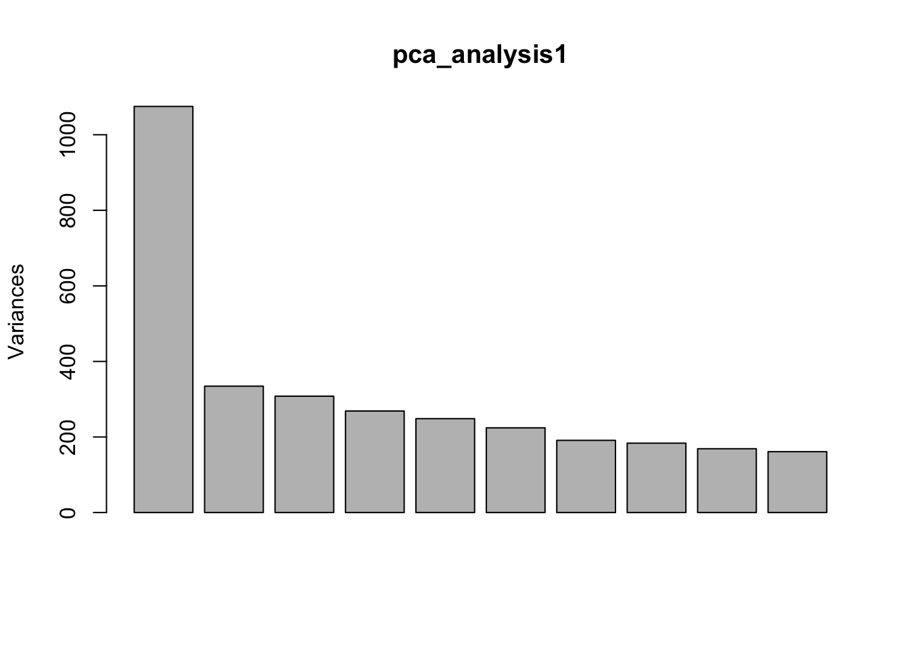
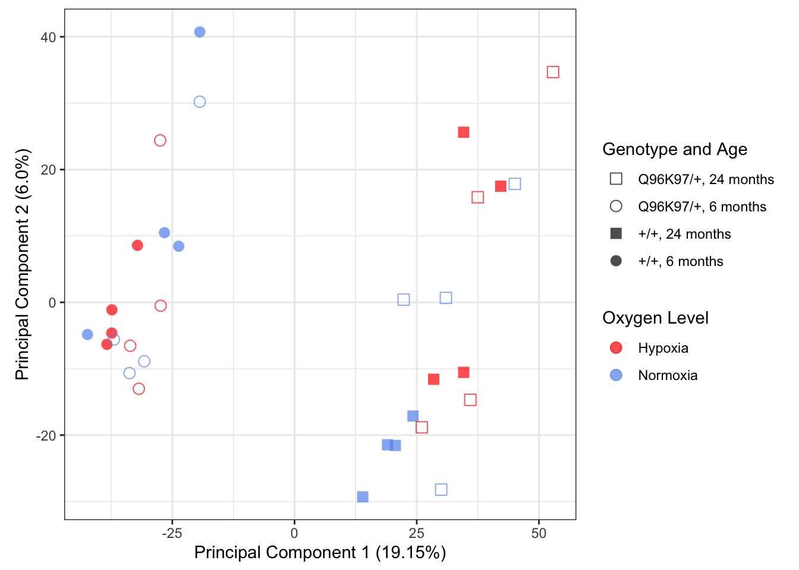
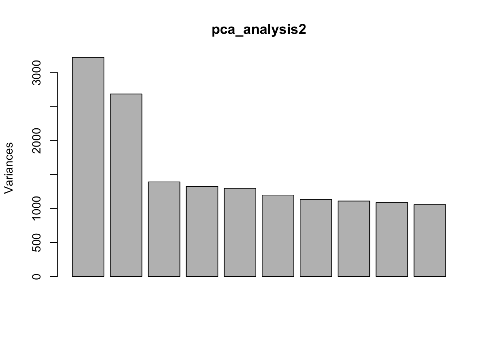
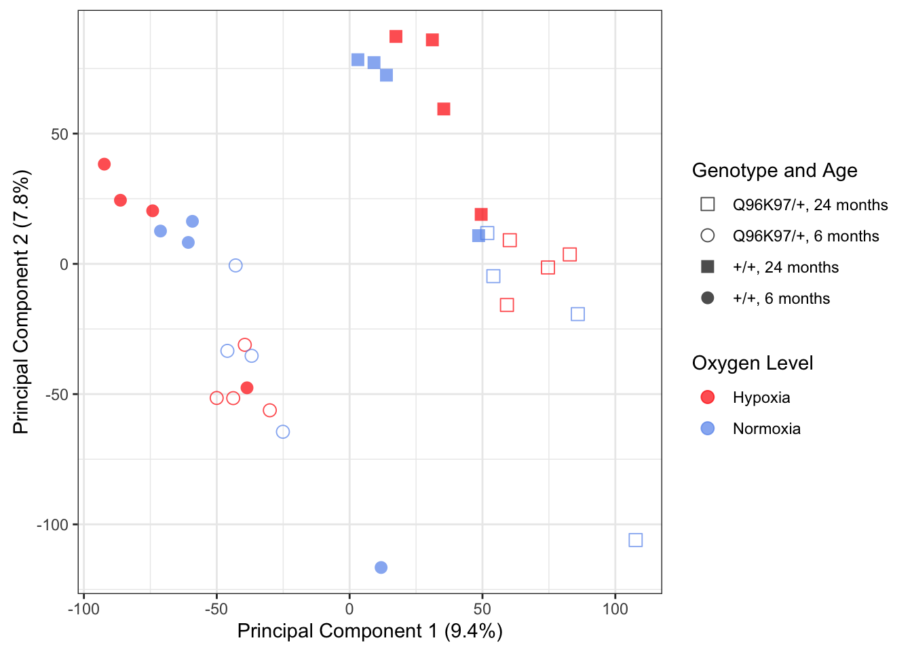
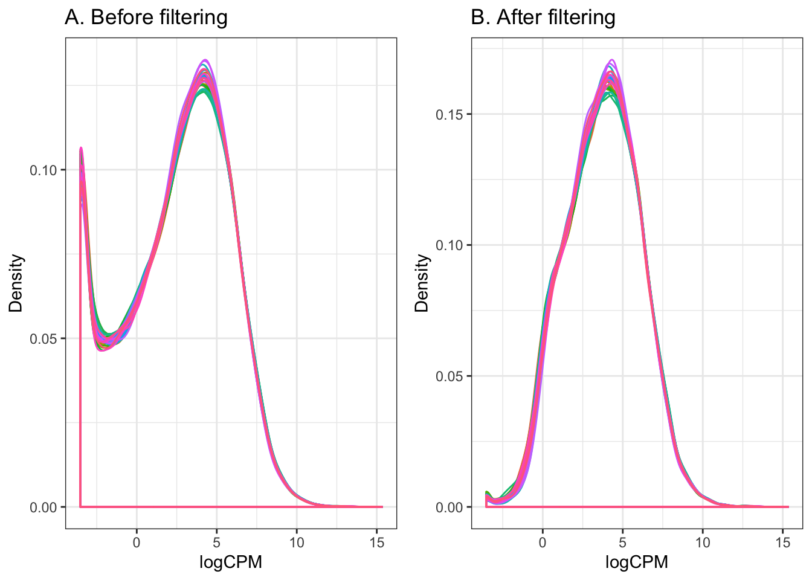
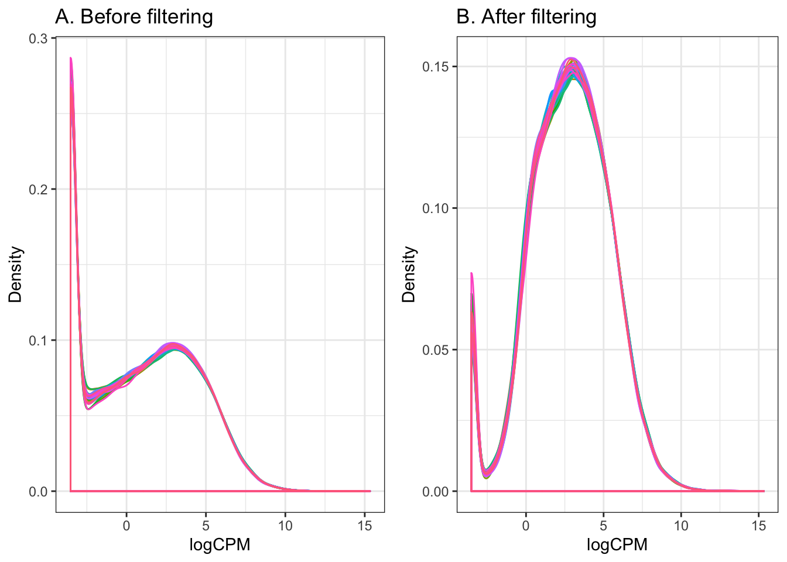

Last updated: 2020-04-22
Checks: 7 0
Knit directory: ire/
This reproducible R Markdown analysis was created with workflowr (version 1.6.1). The Checks tab describes the reproducibility checks that were applied when the results were created. The Past versions tab lists the development history.
Great! Since the R Markdown file has been committed to the Git repository, you know the exact version of the code that produced these results.
Great job! The global environment was empty. Objects defined in the global environment can affect the analysis in your R Markdown file in unknown ways. For reproduciblity it’s best to always run the code in an empty environment.
The command set.seed(20200420) was run prior to running the code in the R Markdown file. Setting a seed ensures that any results that rely on randomness, e.g. subsampling or permutations, are reproducible.
Great job! Recording the operating system, R version, and package versions is critical for reproducibility.
Nice! There were no cached chunks for this analysis, so you can be confident that you successfully produced the results during this run.
Great job! Using relative paths to the files within your workflowr project makes it easier to run your code on other machines.
Great! You are using Git for version control. Tracking code development and connecting the code version to the results is critical for reproducibility.
The results in this page were generated with repository version 0f8be9f. See the Past versions tab to see a history of the changes made to the R Markdown and HTML files.
Note that you need to be careful to ensure that all relevant files for the analysis have been committed to Git prior to generating the results (you can use wflow_publish or wflow_git_commit). workflowr only checks the R Markdown file, but you know if there are other scripts or data files that it depends on. Below is the status of the Git repository when the results were generated:
Ignored files:
Ignored: .DS_Store
Ignored: .RData
Ignored: .Rhistory
Ignored: .Trash/
Ignored: .continuum/
Ignored: .gnupg_pre_2.1/
Ignored: .matplotlib/
Ignored: .t_coffee/
Ignored: Documents/.DS_Store
Ignored: Documents/GitHub/.DS_Store
Ignored: Documents/GitHub/praiseme/praiseme/.Rhistory
Ignored: Documents/GitHub/praiseme/praiseme/.Rproj.user/
Ignored: Documents/NewNotes/notes/
Ignored: Documents/Pictures/
Ignored: Documents/Processing/.DS_Store
Ignored: Documents/Processing/examples/
Ignored: Documents/Processing/libraries/
Ignored: Documents/Processing/spirograph/.DS_Store
Ignored: Documents/Processing/templates/
Ignored: Documents/Processing/tools/
Ignored: Documents/R/
Ignored: Documents/Review-Article.scriv/Settings/User/
Ignored: Documents/ReviewArticlePlanning.scriv/Settings/User/
Ignored: Documents/Tutorial.scriv/Settings/User/
Ignored: Documents/Untitled.scriv/Settings/User/
Ignored: Documents/test.scriv/Settings/User/
Ignored: backup/
Ignored: dircreate/
Untracked files:
Untracked: .AnnotationHub/
Untracked: .CFUserTextEncoding
Untracked: .CHRONOS/
Untracked: .ENA.sh.swp
Untracked: .MacOSX/
Untracked: .RDataTmp
Untracked: .Rapp.history
Untracked: .Xauthority
Untracked: .adobe/
Untracked: .bash_history
Untracked: .bash_profile
Untracked: .bash_profile-anaconda.bak
Untracked: .bash_profile-miniconda3.bak
Untracked: .bash_sessions/
Untracked: .bashrc
Untracked: .bitmonero/
Untracked: .cache/
Untracked: .conda/
Untracked: .condarc
Untracked: .config/
Untracked: .cpanm/
Untracked: .cups/
Untracked: .dlv/
Untracked: .docker/
Untracked: .electrum/
Untracked: .gitconfig
Untracked: .gitflow_export
Untracked: .gitignore
Untracked: .gitignore_global
Untracked: .gnupg/
Untracked: .hgignore_global
Untracked: .keras/
Untracked: .node-gyp/
Untracked: .npm/
Untracked: .nx/
Untracked: .oh-my-zsh/
Untracked: .oracle_jre_usage/
Untracked: .qt/
Untracked: .rnd
Untracked: .rstudio-desktop/
Untracked: .s1.sh
Untracked: .savant/
Untracked: .serverauth.1056
Untracked: .serverauth.1208
Untracked: .serverauth.16273
Untracked: .serverauth.1656
Untracked: .serverauth.18995
Untracked: .serverauth.20301
Untracked: .serverauth.35255
Untracked: .serverauth.38277
Untracked: .serverauth.40350
Untracked: .serverauth.4262
Untracked: .serverauth.4315
Untracked: .serverauth.4358
Untracked: .serverauth.57832
Untracked: .serverauth.63886
Untracked: .serverauth.79286
Untracked: .serverauth.81376
Untracked: .serverauth.920
Untracked: .ssh/
Untracked: .stCommitMsg
Untracked: .subversion/
Untracked: .sudo_as_admin_successful
Untracked: .vim/
Untracked: .viminfo
Untracked: .vscode/
Untracked: .yjp/
Untracked: .zcompdump-ELIZA-5.2
Untracked: .zcompdump-ELIZA-5.3
Untracked: .zsh-update
Untracked: .zsh_history
Untracked: .zshrc
Untracked: 0.361366553072916.tmp
Untracked: 0.547629240007279.tmp
Untracked: 0.561695152931986.tmp
Untracked: 0.738235249024914.tmp
Untracked: 496128434
Untracked: Applications/
Untracked: BSgenome.Drerio.UCSC.danRer11/
Untracked: Boostnote/
Untracked: Box Sync/
Untracked: Box/
Untracked: CytoscapeConfiguration/
Untracked: Desktop/
Untracked: Documents/.localized
Untracked: Documents/GitHub/ire/
Untracked: Documents/GitHub/notes/
Untracked: Documents/GitHub/praiseme/praiseme/R/praiseme.R
Untracked: Documents/GitHub/praiseme/praiseme/man/praiseme.Rd
Untracked: Downloads/
Untracked: Drosophila_melanogaster.BDGP6.ncrna.fa
Untracked: FKBP5-24mths.png
Untracked: FKBP5-6mths.png
Untracked: FKBP5-Oldfish-Mutants.png
Untracked: FKBP5-Oldfish_Wt.png
Untracked: Google Drive/
Untracked: Library/
Untracked: Monero/
Untracked: Movies/
Untracked: Music/
Untracked: PSEN1-Oldfish-Mutants.png
Untracked: PSEN1-Oldfish-Wt.png
Untracked: Pictures/
Untracked: Public/
Untracked: R-3.4.1.pkg
Untracked: Research/
Untracked: RightFont/
Untracked: Sashimi-24mth.png
Untracked: Sashimi-6mth.png
Untracked: Sashimi.png
Untracked: Sashimi2.png
Untracked: Sashimi3.png
Untracked: TableS13-ZScores.xlsx
Untracked: Untitled.csv
Untracked: Untitled.pdf
Untracked: Zebrafish_RNAseq_DE/
Untracked: _book/
Untracked: _bookdown.yml
Untracked: _bookdown_files/
Untracked: anaconda/
Untracked: bib/
Untracked: bin/
Untracked: body.Rmd
Untracked: bookdownplus.Rproj
Untracked: cpp/
Untracked: downloadUrl.gff
Untracked: example/
Untracked: gekko/
Untracked: gitRepos/
Untracked: go/
Untracked: graph.pdf
Untracked: gridsearch.zip
Untracked: gridsearch/
Untracked: homer/
Untracked: hub
Untracked: igv/
Untracked: images/
Untracked: index.Rmd
Untracked: miniconda3/
Untracked: ngsReports_Fastqc.html
Untracked: nhi.dbj
Untracked: nhi/
Untracked: nhisci/
Untracked: old_Box/
Untracked: old_Box_2/
Untracked: pathwayDGE.rds
Untracked: permutedStats-actualModules.RData
Untracked: pkg/
Untracked: programs/
Untracked: ran.csv
Untracked: rmd/
Untracked: runPipeline.sh
Untracked: sav.R
Untracked: script2.sh
Untracked: settings.env
Untracked: src/
Untracked: steve.R
Untracked: style/
Untracked: testData/
Untracked: tex/
Untracked: untitled.R
Untracked: zebrafish.png
Untracked: zshrc
Unstaged changes:
Modified: Documents/GitHub/Zebrafish_RNAseq_DE
Modified: Documents/GitHub/forgetfulfish
Modified: Documents/GitHub/k97fsZebrafishAnalysis
Modified: Documents/GitHub/praiseme/praiseme/DESCRIPTION
Modified: Documents/GitHub/praiseme/praiseme/NAMESPACE
Deleted: Documents/GitHub/praiseme/praiseme/R/hello.R
Deleted: Documents/GitHub/praiseme/praiseme/man/hello.Rd
Modified: Documents/GitHub/praiseme/praiseme/praiseme.Rproj
Modified: Documents/GitHub/q96k97
Deleted: README.md
Deleted: transcriptQuantification.Rmd
Staged changes:
New: Documents/.NH-ConferencePoster.pdf.icloud
New: Documents/2017-09-29.txt
New: Documents/COMBINE_Poster.gif
New: Documents/Discussion.md
New: Documents/EndNote/Styles/Harvard_UofA__Style_Manual_Australia_6th_edn__Surname_only_Jan14 Copy Copy.ens
New: Documents/GitHub/2019_Lardelli_AllWT_6month_RNASeq
New: Documents/GitHub/Zebrafish_RNAseq_DE
New: Documents/GitHub/forgetfulfish
New: Documents/GitHub/futura/FuturaPTBold.otf
New: Documents/GitHub/futura/FuturaPTBoldOblique.otf
New: Documents/GitHub/futura/FuturaPTBook.otf
New: Documents/GitHub/futura/FuturaPTBookOblique.otf
New: Documents/GitHub/futura/FuturaPTCondBold.otf
New: Documents/GitHub/futura/FuturaPTCondBoldOblique.otf
New: Documents/GitHub/futura/FuturaPTCondBook.otf
New: Documents/GitHub/futura/FuturaPTCondBookOblique.otf
New: Documents/GitHub/futura/FuturaPTCondExtraBold.otf
New: Documents/GitHub/futura/FuturaPTCondExtraBoldOblique.otf
New: Documents/GitHub/futura/FuturaPTCondMedium.otf
New: Documents/GitHub/futura/FuturaPTCondMediumOblique.otf
New: Documents/GitHub/futura/FuturaPTDemi.otf
New: Documents/GitHub/futura/FuturaPTDemiOblique.otf
New: Documents/GitHub/futura/FuturaPTExtraBold.otf
New: Documents/GitHub/futura/FuturaPTExtraBoldOblique.otf
New: Documents/GitHub/futura/FuturaPTHeavy.otf
New: Documents/GitHub/futura/FuturaPTHeavyOblique.otf
New: Documents/GitHub/futura/FuturaPTLight.otf
New: Documents/GitHub/futura/FuturaPTLightOblique.otf
New: Documents/GitHub/futura/FuturaPTMedium.otf
New: Documents/GitHub/futura/FuturaPTMediumOblique.otf
New: Documents/GitHub/k97fsZebrafishAnalysis
New: Documents/GitHub/praiseme/praiseme/.Rbuildignore
New: Documents/GitHub/praiseme/praiseme/DESCRIPTION
New: Documents/GitHub/praiseme/praiseme/NAMESPACE
New: Documents/GitHub/praiseme/praiseme/R/hello.R
New: Documents/GitHub/praiseme/praiseme/man/hello.Rd
New: Documents/GitHub/praiseme/praiseme/praiseme.Rproj
New: Documents/GitHub/q96k97
New: Documents/K97 L-plastin immuno figure V2/Slide1.tiff
New: Documents/K97 L-plastin immuno figure V2/Slide2.tiff
New: Documents/K97 L-plastin immuno figure V2/Slide3.tiff
New: Documents/Library/Groups-ulgroup/33c2cbaf58a24f08b01854f32bb164d2-ulgroup/319a43e708bc40209eb9cd2be2db9d5a-ulgroup/09719fe9a8ba4760996aa02aeaeece8a.ulysses/Content.xml
New: Documents/Library/Groups-ulgroup/33c2cbaf58a24f08b01854f32bb164d2-ulgroup/319a43e708bc40209eb9cd2be2db9d5a-ulgroup/09719fe9a8ba4760996aa02aeaeece8a.ulysses/Text.txt
New: Documents/Library/Groups-ulgroup/33c2cbaf58a24f08b01854f32bb164d2-ulgroup/319a43e708bc40209eb9cd2be2db9d5a-ulgroup/8857a9885273430a8be471fb4a977c0f.ulysses/Content.xml
New: Documents/Library/Groups-ulgroup/33c2cbaf58a24f08b01854f32bb164d2-ulgroup/319a43e708bc40209eb9cd2be2db9d5a-ulgroup/8857a9885273430a8be471fb4a977c0f.ulysses/Text.txt
New: Documents/Library/Groups-ulgroup/33c2cbaf58a24f08b01854f32bb164d2-ulgroup/319a43e708bc40209eb9cd2be2db9d5a-ulgroup/Info.ulgroup
New: Documents/Library/Groups-ulgroup/33c2cbaf58a24f08b01854f32bb164d2-ulgroup/319a43e708bc40209eb9cd2be2db9d5a-ulgroup/de8d51154b59494d8b0a4ab28abbac51.ulysses/Content.xml
New: Documents/Library/Groups-ulgroup/33c2cbaf58a24f08b01854f32bb164d2-ulgroup/319a43e708bc40209eb9cd2be2db9d5a-ulgroup/de8d51154b59494d8b0a4ab28abbac51.ulysses/Text.txt
New: Documents/Library/Groups-ulgroup/33c2cbaf58a24f08b01854f32bb164d2-ulgroup/319a43e708bc40209eb9cd2be2db9d5a-ulgroup/efa8615f86f64b8283492b269a4fc746.ulysses/Content.xml
New: Documents/Library/Groups-ulgroup/33c2cbaf58a24f08b01854f32bb164d2-ulgroup/319a43e708bc40209eb9cd2be2db9d5a-ulgroup/efa8615f86f64b8283492b269a4fc746.ulysses/Text.txt
New: Documents/Library/Groups-ulgroup/33c2cbaf58a24f08b01854f32bb164d2-ulgroup/7e4edaf29ca04951ae21507848cca99a-ulgroup/5e09bb30aa7042449b630dae2faab727.ulysses/Content.xml
New: Documents/Library/Groups-ulgroup/33c2cbaf58a24f08b01854f32bb164d2-ulgroup/7e4edaf29ca04951ae21507848cca99a-ulgroup/5e09bb30aa7042449b630dae2faab727.ulysses/Text.txt
New: Documents/Library/Groups-ulgroup/33c2cbaf58a24f08b01854f32bb164d2-ulgroup/7e4edaf29ca04951ae21507848cca99a-ulgroup/6270e917773b4409b44ffc30a0c0d4f9.ulysses/Content.xml
New: Documents/Library/Groups-ulgroup/33c2cbaf58a24f08b01854f32bb164d2-ulgroup/7e4edaf29ca04951ae21507848cca99a-ulgroup/6270e917773b4409b44ffc30a0c0d4f9.ulysses/Text.txt
New: Documents/Library/Groups-ulgroup/33c2cbaf58a24f08b01854f32bb164d2-ulgroup/7e4edaf29ca04951ae21507848cca99a-ulgroup/Info.ulgroup
New: Documents/Library/Groups-ulgroup/33c2cbaf58a24f08b01854f32bb164d2-ulgroup/7e4edaf29ca04951ae21507848cca99a-ulgroup/f05b99ea57a4428e855e008465057e3f.ulysses/Content.xml
New: Documents/Library/Groups-ulgroup/33c2cbaf58a24f08b01854f32bb164d2-ulgroup/7e4edaf29ca04951ae21507848cca99a-ulgroup/f05b99ea57a4428e855e008465057e3f.ulysses/Text.txt
New: Documents/Library/Groups-ulgroup/33c2cbaf58a24f08b01854f32bb164d2-ulgroup/Info.ulgroup
New: Documents/Library/Groups-ulgroup/33c2cbaf58a24f08b01854f32bb164d2-ulgroup/fda38c03c74744e7b00f2237daaaf4a6-ulgroup/5c21d9eb2cd443c4a1aafabc325c13b5.ulysses/Content.xml
New: Documents/Library/Groups-ulgroup/33c2cbaf58a24f08b01854f32bb164d2-ulgroup/fda38c03c74744e7b00f2237daaaf4a6-ulgroup/5c21d9eb2cd443c4a1aafabc325c13b5.ulysses/Media/0.iCloud On My Mac.4fd7a37dc72544aa8ad6ad2579652a02.jpg
New: Documents/Library/Groups-ulgroup/33c2cbaf58a24f08b01854f32bb164d2-ulgroup/fda38c03c74744e7b00f2237daaaf4a6-ulgroup/5c21d9eb2cd443c4a1aafabc325c13b5.ulysses/Text.txt
New: Documents/Library/Groups-ulgroup/33c2cbaf58a24f08b01854f32bb164d2-ulgroup/fda38c03c74744e7b00f2237daaaf4a6-ulgroup/5e53401c53af4596acb2e038c79e3eab.ulysses/Content.xml
New: Documents/Library/Groups-ulgroup/33c2cbaf58a24f08b01854f32bb164d2-ulgroup/fda38c03c74744e7b00f2237daaaf4a6-ulgroup/5e53401c53af4596acb2e038c79e3eab.ulysses/Text.txt
New: Documents/Library/Groups-ulgroup/33c2cbaf58a24f08b01854f32bb164d2-ulgroup/fda38c03c74744e7b00f2237daaaf4a6-ulgroup/Info.ulgroup
New: Documents/Library/Groups-ulgroup/33c2cbaf58a24f08b01854f32bb164d2-ulgroup/fda38c03c74744e7b00f2237daaaf4a6-ulgroup/b292d4b17521411d9626b0cb1797fe85.ulysses/Content.xml
New: Documents/Library/Groups-ulgroup/33c2cbaf58a24f08b01854f32bb164d2-ulgroup/fda38c03c74744e7b00f2237daaaf4a6-ulgroup/b292d4b17521411d9626b0cb1797fe85.ulysses/Text.txt
New: Documents/Library/Groups-ulgroup/Info.ulgroup
New: Documents/Library/Info.ulgroup
New: Documents/Library/Root.plist
New: Documents/Library/Trash-ultrash/Info.ultrash
New: Documents/Library/Unfiled-ulgroup/532af22959ba4fc092f08ee0499b060a.ulysses/Content.xml
New: Documents/Library/Unfiled-ulgroup/532af22959ba4fc092f08ee0499b060a.ulysses/Text.txt
New: Documents/Library/Unfiled-ulgroup/Info.ulgroup
New: Documents/Library/Unfiled-ulgroup/b2d4e1a5449e4aab8431ed1aaaf8e6e3.ulysses/Content.xml
New: Documents/Library/Unfiled-ulgroup/b2d4e1a5449e4aab8431ed1aaaf8e6e3.ulysses/Text.txt
New: Documents/Minimal Wardrobe.md
New: Documents/My EndNote Library - NG.txt
New: Documents/My EndNote Library 3.rtf
New: Documents/My EndNote Library-Dupl.Data/rdb/csort.MYD
New: Documents/My EndNote Library-Dupl.Data/rdb/csort.MYI
New: Documents/My EndNote Library-Dupl.Data/rdb/csort.frm
New: Documents/My EndNote Library-Dupl.Data/rdb/db.opt
New: Documents/My EndNote Library-Dupl.Data/rdb/jterms.MYD
New: Documents/My EndNote Library-Dupl.Data/rdb/jterms.MYI
New: Documents/My EndNote Library-Dupl.Data/rdb/jterms.frm
New: Documents/My EndNote Library-Dupl.Data/rdb/misc.MYD
New: Documents/My EndNote Library-Dupl.Data/rdb/misc.MYI
New: Documents/My EndNote Library-Dupl.Data/rdb/misc.frm
New: Documents/My EndNote Library-Dupl.Data/rdb/pdf_index.MYD
New: Documents/My EndNote Library-Dupl.Data/rdb/pdf_index.MYI
New: Documents/My EndNote Library-Dupl.Data/rdb/pdf_index.frm
New: Documents/My EndNote Library-Dupl.Data/rdb/refs.MYD
New: Documents/My EndNote Library-Dupl.Data/rdb/refs.MYI
New: Documents/My EndNote Library-Dupl.Data/rdb/refs.frm
New: Documents/My EndNote Library-Dupl.Data/rdb/refs_ext.MYD
New: Documents/My EndNote Library-Dupl.Data/rdb/refs_ext.MYI
New: Documents/My EndNote Library-Dupl.Data/rdb/refs_ext.frm
New: Documents/My EndNote Library-Dupl.Data/rdb/terms.MYD
New: Documents/My EndNote Library-Dupl.Data/rdb/terms.MYI
New: Documents/My EndNote Library-Dupl.Data/rdb/terms.frm
New: Documents/My EndNote Library-Dupl.Data/tdb/csort.MYD
New: Documents/My EndNote Library-Dupl.Data/tdb/csort.MYI
New: Documents/My EndNote Library-Dupl.Data/tdb/csort.frm
New: Documents/My EndNote Library-Dupl.Data/tdb/db.opt
New: Documents/My EndNote Library-Dupl.Data/tdb/jterms.MYD
New: Documents/My EndNote Library-Dupl.Data/tdb/jterms.MYI
New: Documents/My EndNote Library-Dupl.Data/tdb/jterms.frm
New: Documents/My EndNote Library-Dupl.Data/tdb/misc.MYD
New: Documents/My EndNote Library-Dupl.Data/tdb/misc.MYI
New: Documents/My EndNote Library-Dupl.Data/tdb/misc.frm
New: Documents/My EndNote Library-Dupl.Data/tdb/pdf_index.MYD
New: Documents/My EndNote Library-Dupl.Data/tdb/pdf_index.MYI
New: Documents/My EndNote Library-Dupl.Data/tdb/pdf_index.frm
New: Documents/My EndNote Library-Dupl.Data/tdb/refs.MYD
New: Documents/My EndNote Library-Dupl.Data/tdb/refs.MYI
New: Documents/My EndNote Library-Dupl.Data/tdb/refs.frm
New: Documents/My EndNote Library-Dupl.Data/tdb/refs_ext.MYD
New: Documents/My EndNote Library-Dupl.Data/tdb/refs_ext.MYI
New: Documents/My EndNote Library-Dupl.Data/tdb/refs_ext.frm
New: Documents/My EndNote Library-Dupl.Data/tdb/terms.MYD
New: Documents/My EndNote Library-Dupl.Data/tdb/terms.MYI
New: Documents/My EndNote Library-Dupl.Data/tdb/terms.frm
New: Documents/My EndNote Library-Dupl.enl
New: Documents/My EndNote Library-Dupl.txt
New: Documents/My EndNote Library.Data/rdb/csort.MYD
New: Documents/My EndNote Library.Data/rdb/csort.MYI
New: Documents/My EndNote Library.Data/rdb/csort.frm
New: Documents/My EndNote Library.Data/rdb/db.opt
New: Documents/My EndNote Library.Data/rdb/jterms.MYD
New: Documents/My EndNote Library.Data/rdb/jterms.MYI
New: Documents/My EndNote Library.Data/rdb/jterms.frm
New: Documents/My EndNote Library.Data/rdb/misc.MYD
New: Documents/My EndNote Library.Data/rdb/misc.MYI
New: Documents/My EndNote Library.Data/rdb/misc.frm
New: Documents/My EndNote Library.Data/rdb/pdf_index.MYD
New: Documents/My EndNote Library.Data/rdb/pdf_index.MYI
New: Documents/My EndNote Library.Data/rdb/pdf_index.frm
New: Documents/My EndNote Library.Data/rdb/refs.MYD
New: Documents/My EndNote Library.Data/rdb/refs.MYI
New: Documents/My EndNote Library.Data/rdb/refs.frm
New: Documents/My EndNote Library.Data/rdb/refs_ext.MYD
New: Documents/My EndNote Library.Data/rdb/refs_ext.MYI
New: Documents/My EndNote Library.Data/rdb/refs_ext.frm
New: Documents/My EndNote Library.Data/rdb/terms.MYD
New: Documents/My EndNote Library.Data/rdb/terms.MYI
New: Documents/My EndNote Library.Data/rdb/terms.frm
New: Documents/My EndNote Library.Data/tdb/csort.MYD
New: Documents/My EndNote Library.Data/tdb/csort.MYI
New: Documents/My EndNote Library.Data/tdb/csort.frm
New: Documents/My EndNote Library.Data/tdb/db.opt
New: Documents/My EndNote Library.Data/tdb/jterms.MYD
New: Documents/My EndNote Library.Data/tdb/jterms.MYI
New: Documents/My EndNote Library.Data/tdb/jterms.frm
New: Documents/My EndNote Library.Data/tdb/misc.MYD
New: Documents/My EndNote Library.Data/tdb/misc.MYI
New: Documents/My EndNote Library.Data/tdb/misc.frm
New: Documents/My EndNote Library.Data/tdb/pdf_index.MYD
New: Documents/My EndNote Library.Data/tdb/pdf_index.MYI
New: Documents/My EndNote Library.Data/tdb/pdf_index.frm
New: Documents/My EndNote Library.Data/tdb/refs.MYD
New: Documents/My EndNote Library.Data/tdb/refs.MYI
New: Documents/My EndNote Library.Data/tdb/refs.frm
New: Documents/My EndNote Library.Data/tdb/refs_ext.MYD
New: Documents/My EndNote Library.Data/tdb/refs_ext.MYI
New: Documents/My EndNote Library.Data/tdb/refs_ext.frm
New: Documents/My EndNote Library.Data/tdb/terms.MYD
New: Documents/My EndNote Library.Data/tdb/terms.MYI
New: Documents/My EndNote Library.Data/tdb/terms.frm
New: Documents/My EndNote Library.enl
New: Documents/My EndNote Library.htm
New: Documents/NG.rtf
New: Documents/NewNotes/boostnote.json
New: Documents/Pages from sankeyDiagram.pdf
New: Documents/Processing/books/books.pde
New: Documents/Processing/books/hi.pde
New: Documents/Processing/books2/books2.pde
New: Documents/Processing/learning/learning.pde
New: Documents/Processing/modes/PythonMode/LICENSE.txt
New: Documents/Processing/modes/PythonMode/application/macosx/Info.plist.tmpl
New: Documents/Processing/modes/PythonMode/application/macosx/dialogs.applescript
New: Documents/Processing/modes/PythonMode/application/macosx/findjava
New: Documents/Processing/modes/PythonMode/application/macosx/sketch.icns
New: Documents/Processing/modes/PythonMode/application/windows/sketch.ico
New: Documents/Processing/modes/PythonMode/examples/Advanced/KeyCodes/KeyCodes.pyde
New: Documents/Processing/modes/PythonMode/examples/Advanced/KeyCodes/sketch.properties
New: Documents/Processing/modes/PythonMode/examples/Basics/Camera/MoveEye/MoveEye.pyde
New: Documents/Processing/modes/PythonMode/examples/Basics/Camera/Orthographic/Orthographic.pyde
New: Documents/Processing/modes/PythonMode/examples/Basics/Camera/Perspective/Perspective.pyde
New: Documents/Processing/modes/PythonMode/examples/Basics/Color/Brightness/Brightness.pyde
New: Documents/Processing/modes/PythonMode/examples/Basics/Color/ColorVariables/ColorVariables.pyde
New: Documents/Processing/modes/PythonMode/examples/Basics/Color/Hue/Hue.pyde
New: Documents/Processing/modes/PythonMode/examples/Basics/Color/LinearGradient/LinearGradient.pyde
New: Documents/Processing/modes/PythonMode/examples/Basics/Color/RadialGradient/RadialGradient.pyde
New: Documents/Processing/modes/PythonMode/examples/Basics/Color/Relativity/Relativity.pyde
New: Documents/Processing/modes/PythonMode/examples/Basics/Color/Saturation/Saturation.pyde
New: Documents/Processing/modes/PythonMode/examples/Basics/Color/WaveGradient/WaveGradient.pyde
New: Documents/Processing/modes/PythonMode/examples/Basics/Control/BooleanOperators/BooleanOperators.pyde
New: Documents/Processing/modes/PythonMode/examples/Basics/Control/Conditionals1/Conditionals1.pyde
New: Documents/Processing/modes/PythonMode/examples/Basics/Control/Conditionals2/Conditionals2.pyde
New: Documents/Processing/modes/PythonMode/examples/Basics/Control/EmbeddedIteration/EmbeddedIteration.pyde
New: Documents/Processing/modes/PythonMode/examples/Basics/Control/Iteration/Iteration.pyde
New: Documents/Processing/modes/PythonMode/examples/Basics/Data/DatatypeConversion/DatatypeConversion.pyde
New: Documents/Processing/modes/PythonMode/examples/Basics/Data/DatatypeConversion/data/Georgia.ttf
New: Documents/Processing/modes/PythonMode/examples/Basics/Data/IntegersFloats/IntegersFloats.pyde
New: Documents/Processing/modes/PythonMode/examples/Basics/Data/Strings/Strings.pyde
New: Documents/Processing/modes/PythonMode/examples/Basics/Data/Strings/data/Georgia.ttf
New: Documents/Processing/modes/PythonMode/examples/Basics/Data/TrueFalse/TrueFalse.pyde
New: Documents/Processing/modes/PythonMode/examples/Basics/Data/VariableScope/VariableScope.pyde
New: Documents/Processing/modes/PythonMode/examples/Basics/Data/Variables/Variables.pyde
New: Documents/Processing/modes/PythonMode/examples/Basics/Form/Bezier/Bezier.pyde
New: Documents/Processing/modes/PythonMode/examples/Basics/Form/PieChart/PieChart.pyde
New: Documents/Processing/modes/PythonMode/examples/Basics/Form/PointsLines/PointsLines.pyde
New: Documents/Processing/modes/PythonMode/examples/Basics/Form/Primitives3D/Primitives3D.pyde
New: Documents/Processing/modes/PythonMode/examples/Basics/Form/RegularPolygon/RegularPolygon.pyde
New: Documents/Processing/modes/PythonMode/examples/Basics/Form/ShapePrimitives/ShapePrimitives.pyde
New: Documents/Processing/modes/PythonMode/examples/Basics/Form/Star/Star.pyde
New: Documents/Processing/modes/PythonMode/examples/Basics/Form/TriangleStrip/TriangleStrip.pyde
New: Documents/Processing/modes/PythonMode/examples/Basics/Image/Alphamask/Alphamask.pyde
New: Documents/Processing/modes/PythonMode/examples/Basics/Image/Alphamask/data/mask.jpg
New: Documents/Processing/modes/PythonMode/examples/Basics/Image/Alphamask/data/moonwalk.jpg
New: Documents/Processing/modes/PythonMode/examples/Basics/Image/BackgroundImage/BackgroundImage.pyde
New: Documents/Processing/modes/PythonMode/examples/Basics/Image/BackgroundImage/data/moonwalk.jpg
New: Documents/Processing/modes/PythonMode/examples/Basics/Image/CreateImage/CreateImage.pyde
New: Documents/Processing/modes/PythonMode/examples/Basics/Image/LoadDisplayImage/LoadDisplayImage.pyde
New: Documents/Processing/modes/PythonMode/examples/Basics/Image/LoadDisplayImage/data/moonwalk.jpg
New: Documents/Processing/modes/PythonMode/examples/Basics/Image/Pointillism/Pointillism.pyde
New: Documents/Processing/modes/PythonMode/examples/Basics/Image/Pointillism/data/moonwalk.jpg
New: Documents/Processing/modes/PythonMode/examples/Basics/Image/RequestImage/RequestImage.pyde
New: Documents/Processing/modes/PythonMode/examples/Basics/Image/RequestImage/data/PT_anim0000.gif
New: Documents/Processing/modes/PythonMode/examples/Basics/Image/RequestImage/data/PT_anim0001.gif
New: Documents/Processing/modes/PythonMode/examples/Basics/Image/RequestImage/data/PT_anim0002.gif
New: Documents/Processing/modes/PythonMode/examples/Basics/Image/RequestImage/data/PT_anim0003.gif
New: Documents/Processing/modes/PythonMode/examples/Basics/Image/RequestImage/data/PT_anim0004.gif
New: Documents/Processing/modes/PythonMode/examples/Basics/Image/RequestImage/data/PT_anim0005.gif
New: Documents/Processing/modes/PythonMode/examples/Basics/Image/RequestImage/data/PT_anim0006.gif
New: Documents/Processing/modes/PythonMode/examples/Basics/Image/RequestImage/data/PT_anim0007.gif
New: Documents/Processing/modes/PythonMode/examples/Basics/Image/RequestImage/data/PT_anim0008.gif
New: Documents/Processing/modes/PythonMode/examples/Basics/Image/RequestImage/data/PT_anim0009.gif
New: Documents/Processing/modes/PythonMode/examples/Basics/Image/RequestImage/data/PT_anim0010.gif
New: Documents/Processing/modes/PythonMode/examples/Basics/Image/RequestImage/data/PT_anim0011.gif
New: Documents/Processing/modes/PythonMode/examples/Basics/Image/Transparency/Transparency.pyde
New: Documents/Processing/modes/PythonMode/examples/Basics/Image/Transparency/data/moonwalk.jpg
New: Documents/Processing/modes/PythonMode/examples/Basics/Input/Clock/Clock.pyde
New: Documents/Processing/modes/PythonMode/examples/Basics/Input/Constrain/Constrain.pyde
New: Documents/Processing/modes/PythonMode/examples/Basics/Input/Easing/Easing.pyde
New: Documents/Processing/modes/PythonMode/examples/Basics/Input/Keyboard/Keyboard.pyde
New: Documents/Processing/modes/PythonMode/examples/Basics/Input/KeyboardFunctions/KeyboardFunctions.pyde
New: Documents/Processing/modes/PythonMode/examples/Basics/Input/Milliseconds/Milliseconds.pyde
New: Documents/Processing/modes/PythonMode/examples/Basics/Input/Mouse1D/Mouse1D.pyde
New: Documents/Processing/modes/PythonMode/examples/Basics/Input/Mouse2D/Mouse2D.pyde
New: Documents/Processing/modes/PythonMode/examples/Basics/Input/MouseFunctions/MouseFunctions.pyde
New: Documents/Processing/modes/PythonMode/examples/Basics/Input/MousePress/MousePress.pyde
New: Documents/Processing/modes/PythonMode/examples/Basics/Input/MouseSignals/MouseSignals.pyde
New: Documents/Processing/modes/PythonMode/examples/Basics/Input/StoringInput/StoringInput.pyde
New: Documents/Processing/modes/PythonMode/examples/Basics/Lights/Directional/Directional.pyde
New: Documents/Processing/modes/PythonMode/examples/Basics/Lights/Mixture/Mixture.pyde
New: Documents/Processing/modes/PythonMode/examples/Basics/Lights/MixtureGrid/MixtureGrid.pyde
New: Documents/Processing/modes/PythonMode/examples/Basics/Lights/OnOff/OnOff.pyde
New: Documents/Processing/modes/PythonMode/examples/Basics/Lights/Reflection/Reflection.pyde
New: Documents/Processing/modes/PythonMode/examples/Basics/Lights/Spot/Spot.pyde
New: Documents/Processing/modes/PythonMode/examples/Basics/Lists/List/List.pyde
New: Documents/Processing/modes/PythonMode/examples/Basics/Lists/List2D/List2D.pyde
New: Documents/Processing/modes/PythonMode/examples/Basics/Lists/ListObjects/ListObjects.pyde
New: Documents/Processing/modes/PythonMode/examples/Basics/Lists/ListObjects/module.py
New: Documents/Processing/modes/PythonMode/examples/Basics/Math/AdditiveWave/AdditiveWave.pyde
New: Documents/Processing/modes/PythonMode/examples/Basics/Math/Arctangent/Arctangent.pyde
New: Documents/Processing/modes/PythonMode/examples/Basics/Math/Arctangent/eye.py
New: Documents/Processing/modes/PythonMode/examples/Basics/Math/Distance1D/Distance1D.pyde
New: Documents/Processing/modes/PythonMode/examples/Basics/Math/Distance2D/Distance2D.pyde
New: Documents/Processing/modes/PythonMode/examples/Basics/Math/DoubleRandom/DoubleRandom.pyde
New: Documents/Processing/modes/PythonMode/examples/Basics/Math/Graphing2DEquation/Graphing2DEquation.pyde
New: Documents/Processing/modes/PythonMode/examples/Basics/Math/IncrementDecrement/IncrementDecrement.pyde
New: Documents/Processing/modes/PythonMode/examples/Basics/Math/Interpolate/Interpolate.pyde
New: Documents/Processing/modes/PythonMode/examples/Basics/Math/Map/Map.pyde
New: Documents/Processing/modes/PythonMode/examples/Basics/Math/Noise1D/Noise1D.pyde
New: Documents/Processing/modes/PythonMode/examples/Basics/Math/Noise2D/Noise2D.pyde
New: Documents/Processing/modes/PythonMode/examples/Basics/Math/Noise3D/Noise3D.pyde
New: Documents/Processing/modes/PythonMode/examples/Basics/Math/NoiseWave/NoiseWave.pyde
New: Documents/Processing/modes/PythonMode/examples/Basics/Math/OperatorPrecedence/OperatorPrecedence.pyde
New: Documents/Processing/modes/PythonMode/examples/Basics/Math/PolarToCartesian/PolarToCartesian.pyde
New: Documents/Processing/modes/PythonMode/examples/Basics/Math/Random/Random.pyde
New: Documents/Processing/modes/PythonMode/examples/Basics/Math/RandomGaussian/RandomGaussian.pyde
New: Documents/Processing/modes/PythonMode/examples/Basics/Math/Sine/Sine.pyde
New: Documents/Processing/modes/PythonMode/examples/Basics/Math/SineCosine/SineCosine.pyde
New: Documents/Processing/modes/PythonMode/examples/Basics/Math/SineWave/SineWave.pyde
New: Documents/Processing/modes/PythonMode/examples/Basics/Objects/CompositeObjects/CompositeObjects.pyde
New: Documents/Processing/modes/PythonMode/examples/Basics/Objects/CompositeObjects/egg.py
New: Documents/Processing/modes/PythonMode/examples/Basics/Objects/CompositeObjects/egg_ring.py
New: Documents/Processing/modes/PythonMode/examples/Basics/Objects/CompositeObjects/ring.py
New: Documents/Processing/modes/PythonMode/examples/Basics/Objects/Inheritance/Inheritance.pyde
New: Documents/Processing/modes/PythonMode/examples/Basics/Objects/MultipleConstructors/MultipleConstructors.pyde
New: Documents/Processing/modes/PythonMode/examples/Basics/Objects/Objects/Objects.pyde
New: Documents/Processing/modes/PythonMode/examples/Basics/Shape/DisableStyle/DisableStyle.pyde
New: Documents/Processing/modes/PythonMode/examples/Basics/Shape/DisableStyle/data/bot1.svg
New: Documents/Processing/modes/PythonMode/examples/Basics/Shape/GetChild/GetChild.pyde
New: Documents/Processing/modes/PythonMode/examples/Basics/Shape/GetChild/data/usa-wikipedia.svg
New: Documents/Processing/modes/PythonMode/examples/Basics/Shape/LoadDisplayOBJ/LoadDisplayOBJ.pyde
New: Documents/Processing/modes/PythonMode/examples/Basics/Shape/LoadDisplayOBJ/data/rocket.mtl
New: Documents/Processing/modes/PythonMode/examples/Basics/Shape/LoadDisplayOBJ/data/rocket.obj
New: Documents/Processing/modes/PythonMode/examples/Basics/Shape/LoadDisplayOBJ/data/rocket.png
New: Documents/Processing/modes/PythonMode/examples/Basics/Shape/LoadDisplaySVG/LoadDisplaySVG.pyde
New: Documents/Processing/modes/PythonMode/examples/Basics/Shape/LoadDisplaySVG/data/bot1.svg
New: Documents/Processing/modes/PythonMode/examples/Basics/Shape/ScaleShape/ScaleShape.pyde
New: Documents/Processing/modes/PythonMode/examples/Basics/Shape/ScaleShape/data/bot1.svg
New: Documents/Processing/modes/PythonMode/examples/Basics/Structure/Coordinates/Coordinates.pyde
New: Documents/Processing/modes/PythonMode/examples/Basics/Structure/CreateGraphics/CreateGraphics.pyde
New: Documents/Processing/modes/PythonMode/examples/Basics/Structure/CreateGraphics/data/mask.jpg
New: Documents/Processing/modes/PythonMode/examples/Basics/Structure/CreateGraphics/data/test.jpg
New: Documents/Processing/modes/PythonMode/examples/Basics/Structure/Functions/Functions.pyde
New: Documents/Processing/modes/PythonMode/examples/Basics/Structure/Loop/Loop.pyde
New: Documents/Processing/modes/PythonMode/examples/Basics/Structure/NoLoop/NoLoop.pyde
New: Documents/Processing/modes/PythonMode/examples/Basics/Structure/Recursion/Recursion.pyde
New: Documents/Processing/modes/PythonMode/examples/Basics/Structure/Redraw/Redraw.pyde
New: Documents/Processing/modes/PythonMode/examples/Basics/Structure/SetupDraw/SetupDraw.pyde
New: Documents/Processing/modes/PythonMode/examples/Basics/Structure/StatementsComments/StatementsComments.pyde
New: Documents/Processing/modes/PythonMode/examples/Basics/Structure/WidthHeight/WidthHeight.pyde
New: Documents/Processing/modes/PythonMode/examples/Basics/Transform/Arm/Arm.pyde
New: Documents/Processing/modes/PythonMode/examples/Basics/Transform/Rotate/Rotate.pyde
New: Documents/Processing/modes/PythonMode/examples/Basics/Transform/RotatePushPop/RotatePushPop.pyde
New: Documents/Processing/modes/PythonMode/examples/Basics/Transform/RotateXY/RotateXY.pyde
New: Documents/Processing/modes/PythonMode/examples/Basics/Transform/Scale/Scale.pyde
New: Documents/Processing/modes/PythonMode/examples/Basics/Transform/Translate/Translate.pyde
New: Documents/Processing/modes/PythonMode/examples/Basics/Typography/FiveWaysOfWritingText/FiveWaysOfWritingText.pyde
New: Documents/Processing/modes/PythonMode/examples/Basics/Typography/FiveWaysOfWritingText/sketch.properties
New: Documents/Processing/modes/PythonMode/examples/Basics/Typography/Letters/Letters.pyde
New: Documents/Processing/modes/PythonMode/examples/Basics/Typography/Letters/data/Georgia.ttf
New: Documents/Processing/modes/PythonMode/examples/Basics/Typography/Words/Words.pyde
New: Documents/Processing/modes/PythonMode/examples/Basics/Typography/Words/data/Georgia.ttf
New: Documents/Processing/modes/PythonMode/examples/Basics/Web/EmbeddedLinks/EmbeddedLinks.pyde
New: Documents/Processing/modes/PythonMode/examples/Basics/Web/LoadingImages/LoadingImages.pyde
New: Documents/Processing/modes/PythonMode/examples/Contributed Libraries in Python/ControlP5/Textfield/Textfield.pyde
New: Documents/Processing/modes/PythonMode/examples/Contributed Libraries in Python/Fisica/ContactListener/ContactListener.pyde
New: Documents/Processing/modes/PythonMode/examples/Contributed Libraries in Python/MSAFluid/MSAFluid.pyde
New: Documents/Processing/modes/PythonMode/examples/Contributed Libraries in Python/MSAFluid/particle.py
New: Documents/Processing/modes/PythonMode/examples/Contributed Libraries in Python/MSAFluid/particle_system.py
New: Documents/Processing/modes/PythonMode/examples/Contributed Libraries in Python/OpenCV/BackgroundSubtraction/BackgroundSubtraction.pyde
New: Documents/Processing/modes/PythonMode/examples/Contributed Libraries in Python/OpenCV/BackgroundSubtraction/data/.street.mov.icloud
New: Documents/Processing/modes/PythonMode/examples/Contributed Libraries in Python/OpenCV/BrightestPoint/BrightestPoint.pyde
New: Documents/Processing/modes/PythonMode/examples/Contributed Libraries in Python/OpenCV/BrightestPoint/robot_light.jpg
New: Documents/Processing/modes/PythonMode/examples/Contributed Libraries in Python/OpenCV/BrightnessContrast/BrightnessContrast.pyde
New: Documents/Processing/modes/PythonMode/examples/Contributed Libraries in Python/OpenCV/BrightnessContrast/test.jpg
New: Documents/Processing/modes/PythonMode/examples/Contributed Libraries in Python/OpenCV/CalibrationDemo/CalibrationDemo.pyde
New: Documents/Processing/modes/PythonMode/examples/Contributed Libraries in Python/OpenCV/CalibrationDemo/data/checkerboard.jpg
New: Documents/Processing/modes/PythonMode/examples/Contributed Libraries in Python/OpenCV/ColorChannels/.green_object.png.icloud
New: Documents/Processing/modes/PythonMode/examples/Contributed Libraries in Python/OpenCV/ColorChannels/ColorChannels.pyde
New: Documents/Processing/modes/PythonMode/examples/Contributed Libraries in Python/OpenCV/DepthFromStereo/DepthFromStereo.pyde
New: Documents/Processing/modes/PythonMode/examples/Contributed Libraries in Python/OpenCV/DepthFromStereo/scene_l.jpg
New: Documents/Processing/modes/PythonMode/examples/Contributed Libraries in Python/OpenCV/DepthFromStereo/scene_r.jpg
New: Documents/Processing/modes/PythonMode/examples/Contributed Libraries in Python/OpenCV/DilationAndErosion/DilationAndErosion.pyde
New: Documents/Processing/modes/PythonMode/examples/Contributed Libraries in Python/OpenCV/DilationAndErosion/line_drawing.jpg
New: Documents/Processing/modes/PythonMode/examples/Contributed Libraries in Python/OpenCV/DilationAndErosion/pen_sketch.jpg
New: Documents/Processing/modes/PythonMode/examples/Contributed Libraries in Python/OpenCV/FaceDetection/FaceDetection.pyde
New: Documents/Processing/modes/PythonMode/examples/Contributed Libraries in Python/OpenCV/FaceDetection/data/test.jpg
New: Documents/Processing/modes/PythonMode/examples/Contributed Libraries in Python/OpenCV/FaceDetection/data/test.png
New: Documents/Processing/modes/PythonMode/examples/Contributed Libraries in Python/OpenCV/FaceDetection/data/testImage.png
New: Documents/Processing/modes/PythonMode/examples/Contributed Libraries in Python/OpenCV/FaceDetection/data/transparent_test.png
New: Documents/Processing/modes/PythonMode/examples/Contributed Libraries in Python/OpenCV/FilterImages/FilterImages.pyde
New: Documents/Processing/modes/PythonMode/examples/Contributed Libraries in Python/OpenCV/FilterImages/test.jpg
New: Documents/Processing/modes/PythonMode/examples/Contributed Libraries in Python/OpenCV/FindContours/FindContours.pyde
New: Documents/Processing/modes/PythonMode/examples/Contributed Libraries in Python/OpenCV/FindContours/test.jpg
New: Documents/Processing/modes/PythonMode/examples/Contributed Libraries in Python/OpenCV/FindEdges/FindEdges.pyde
New: Documents/Processing/modes/PythonMode/examples/Contributed Libraries in Python/OpenCV/FindEdges/test.jpg
New: Documents/Processing/modes/PythonMode/examples/Contributed Libraries in Python/OpenCV/FindHistogram/FindHistogram.pyde
New: Documents/Processing/modes/PythonMode/examples/Contributed Libraries in Python/OpenCV/FindHistogram/test.jpg
New: Documents/Processing/modes/PythonMode/examples/Contributed Libraries in Python/OpenCV/HistogramSkinDetection/HistogramSkinDetection.pyde
New: Documents/Processing/modes/PythonMode/examples/Contributed Libraries in Python/OpenCV/HistogramSkinDetection/data/cb-cr.png
New: Documents/Processing/modes/PythonMode/examples/Contributed Libraries in Python/OpenCV/HistogramSkinDetection/data/test.jpg
New: Documents/Processing/modes/PythonMode/examples/Contributed Libraries in Python/OpenCV/LiveCamTest/LiveCamTest.pyde
New: Documents/Processing/modes/PythonMode/examples/Contributed Libraries in Python/OpenCV/LiveCamTest/data/haarcascade_frontalface_alt.xml
New: Documents/Processing/modes/PythonMode/examples/Contributed Libraries in Python/beads/Lesson01_AudioContext/Lesson01_AudioContext.pyde
New: Documents/Processing/modes/PythonMode/examples/Contributed Libraries in Python/beads/Lesson04_SamplePlayer/Lesson04_SamplePlayer.pyde
New: Documents/Processing/modes/PythonMode/examples/Contributed Libraries in Python/ttslib/ttstest/ttstest.pyde
New: Documents/Processing/modes/PythonMode/examples/Demos/Graphics/BoxClock/BoxClock.pyde
New: Documents/Processing/modes/PythonMode/examples/Demos/Graphics/LowLevelGL/LowLevelGL.pyde
New: Documents/Processing/modes/PythonMode/examples/Demos/Graphics/LowLevelGL/data/frag.glsl
New: Documents/Processing/modes/PythonMode/examples/Demos/Graphics/LowLevelGL/data/vert.glsl
New: Documents/Processing/modes/PythonMode/examples/Demos/Graphics/Particles/Particles.pyde
New: Documents/Processing/modes/PythonMode/examples/Demos/Graphics/Particles/data/sprite.png
New: Documents/Processing/modes/PythonMode/examples/Demos/Graphics/Particles/particle.py
New: Documents/Processing/modes/PythonMode/examples/Demos/Graphics/Particles/particle_system.py
New: Documents/Processing/modes/PythonMode/examples/Demos/Graphics/Tentacles/Tentacles.pyde
New: Documents/Processing/modes/PythonMode/examples/Demos/Graphics/Tentacles/segment.py
New: Documents/Processing/modes/PythonMode/examples/Demos/Graphics/Tentacles/tentacle.py
New: Documents/Processing/modes/PythonMode/examples/Demos/Graphics/Yellowtail/Yellowtail.pyde
New: Documents/Processing/modes/PythonMode/examples/Demos/Graphics/Yellowtail/gesture.py
New: Documents/Processing/modes/PythonMode/examples/Demos/Graphics/Yellowtail/vec3f.py
New: Documents/Processing/modes/PythonMode/examples/Python Mode Differences/IntAndFloat/IntAndFloat.pyde
New: Documents/Processing/modes/PythonMode/examples/Python Mode Differences/IntAndFloat/sketch.properties
New: Documents/Processing/modes/PythonMode/examples/Python Mode Differences/LiteralColors/LiteralColors.pyde
New: Documents/Processing/modes/PythonMode/examples/Python Mode Differences/LiteralColors/sketch.properties
New: Documents/Processing/modes/PythonMode/examples/Python Mode Differences/WithStatements/WithStatements.pyde
New: Documents/Processing/modes/PythonMode/examples/Python Mode Differences/WithStatements/sketch.properties
New: Documents/Processing/modes/PythonMode/examples/Topics/Animation/AnimatedSprite/AnimatedSprite.pyde
New: Documents/Processing/modes/PythonMode/examples/Topics/Animation/AnimatedSprite/animation.py
New: Documents/Processing/modes/PythonMode/examples/Topics/Animation/AnimatedSprite/data/PT_Shifty_0000.gif
New: Documents/Processing/modes/PythonMode/examples/Topics/Animation/AnimatedSprite/data/PT_Shifty_0001.gif
New: Documents/Processing/modes/PythonMode/examples/Topics/Animation/AnimatedSprite/data/PT_Shifty_0002.gif
New: Documents/Processing/modes/PythonMode/examples/Topics/Animation/AnimatedSprite/data/PT_Shifty_0003.gif
New: Documents/Processing/modes/PythonMode/examples/Topics/Animation/AnimatedSprite/data/PT_Shifty_0004.gif
New: Documents/Processing/modes/PythonMode/examples/Topics/Animation/AnimatedSprite/data/PT_Shifty_0005.gif
New: Documents/Processing/modes/PythonMode/examples/Topics/Animation/AnimatedSprite/data/PT_Shifty_0006.gif
New: Documents/Processing/modes/PythonMode/examples/Topics/Animation/AnimatedSprite/data/PT_Shifty_0007.gif
New: Documents/Processing/modes/PythonMode/examples/Topics/Animation/AnimatedSprite/data/PT_Shifty_0008.gif
New: Documents/Processing/modes/PythonMode/examples/Topics/Animation/AnimatedSprite/data/PT_Shifty_0009.gif
New: Documents/Processing/modes/PythonMode/examples/Topics/Animation/AnimatedSprite/data/PT_Shifty_0010.gif
New: Documents/Processing/modes/PythonMode/examples/Topics/Animation/AnimatedSprite/data/PT_Shifty_0011.gif
New: Documents/Processing/modes/PythonMode/examples/Topics/Animation/AnimatedSprite/data/PT_Shifty_0012.gif
New: Documents/Processing/modes/PythonMode/examples/Topics/Animation/AnimatedSprite/data/PT_Shifty_0013.gif
New: Documents/Processing/modes/PythonMode/examples/Topics/Animation/AnimatedSprite/data/PT_Shifty_0014.gif
New: Documents/Processing/modes/PythonMode/examples/Topics/Animation/AnimatedSprite/data/PT_Shifty_0015.gif
New: Documents/Processing/modes/PythonMode/examples/Topics/Animation/AnimatedSprite/data/PT_Shifty_0016.gif
New: Documents/Processing/modes/PythonMode/examples/Topics/Animation/AnimatedSprite/data/PT_Shifty_0017.gif
New: Documents/Processing/modes/PythonMode/examples/Topics/Animation/AnimatedSprite/data/PT_Shifty_0018.gif
New: Documents/Processing/modes/PythonMode/examples/Topics/Animation/AnimatedSprite/data/PT_Shifty_0019.gif
New: Documents/Processing/modes/PythonMode/examples/Topics/Animation/AnimatedSprite/data/PT_Shifty_0020.gif
New: Documents/Processing/modes/PythonMode/examples/Topics/Animation/AnimatedSprite/data/PT_Shifty_0021.gif
New: Documents/Processing/modes/PythonMode/examples/Topics/Animation/AnimatedSprite/data/PT_Shifty_0022.gif
New: Documents/Processing/modes/PythonMode/examples/Topics/Animation/AnimatedSprite/data/PT_Shifty_0023.gif
New: Documents/Processing/modes/PythonMode/examples/Topics/Animation/AnimatedSprite/data/PT_Shifty_0024.gif
New: Documents/Processing/modes/PythonMode/examples/Topics/Animation/AnimatedSprite/data/PT_Shifty_0025.gif
New: Documents/Processing/modes/PythonMode/examples/Topics/Animation/AnimatedSprite/data/PT_Shifty_0026.gif
New: Documents/Processing/modes/PythonMode/examples/Topics/Animation/AnimatedSprite/data/PT_Shifty_0027.gif
New: Documents/Processing/modes/PythonMode/examples/Topics/Animation/AnimatedSprite/data/PT_Shifty_0028.gif
New: Documents/Processing/modes/PythonMode/examples/Topics/Animation/AnimatedSprite/data/PT_Shifty_0029.gif
New: Documents/Processing/modes/PythonMode/examples/Topics/Animation/AnimatedSprite/data/PT_Shifty_0030.gif
New: Documents/Processing/modes/PythonMode/examples/Topics/Animation/AnimatedSprite/data/PT_Shifty_0031.gif
New: Documents/Processing/modes/PythonMode/examples/Topics/Animation/AnimatedSprite/data/PT_Shifty_0032.gif
New: Documents/Processing/modes/PythonMode/examples/Topics/Animation/AnimatedSprite/data/PT_Shifty_0033.gif
New: Documents/Processing/modes/PythonMode/examples/Topics/Animation/AnimatedSprite/data/PT_Shifty_0034.gif
New: Documents/Processing/modes/PythonMode/examples/Topics/Animation/AnimatedSprite/data/PT_Shifty_0035.gif
New: Documents/Processing/modes/PythonMode/examples/Topics/Animation/AnimatedSprite/data/PT_Shifty_0036.gif
New: Documents/Processing/modes/PythonMode/examples/Topics/Animation/AnimatedSprite/data/PT_Shifty_0037.gif
New: Documents/Processing/modes/PythonMode/examples/Topics/Animation/AnimatedSprite/data/PT_Teddy_0000.gif
New: Documents/Processing/modes/PythonMode/examples/Topics/Animation/AnimatedSprite/data/PT_Teddy_0001.gif
New: Documents/Processing/modes/PythonMode/examples/Topics/Animation/AnimatedSprite/data/PT_Teddy_0002.gif
New: Documents/Processing/modes/PythonMode/examples/Topics/Animation/AnimatedSprite/data/PT_Teddy_0003.gif
New: Documents/Processing/modes/PythonMode/examples/Topics/Animation/AnimatedSprite/data/PT_Teddy_0004.gif
New: Documents/Processing/modes/PythonMode/examples/Topics/Animation/AnimatedSprite/data/PT_Teddy_0005.gif
New: Documents/Processing/modes/PythonMode/examples/Topics/Animation/AnimatedSprite/data/PT_Teddy_0006.gif
New: Documents/Processing/modes/PythonMode/examples/Topics/Animation/AnimatedSprite/data/PT_Teddy_0007.gif
New: Documents/Processing/modes/PythonMode/examples/Topics/Animation/AnimatedSprite/data/PT_Teddy_0008.gif
New: Documents/Processing/modes/PythonMode/examples/Topics/Animation/AnimatedSprite/data/PT_Teddy_0009.gif
New: Documents/Processing/modes/PythonMode/examples/Topics/Animation/AnimatedSprite/data/PT_Teddy_0010.gif
New: Documents/Processing/modes/PythonMode/examples/Topics/Animation/AnimatedSprite/data/PT_Teddy_0011.gif
New: Documents/Processing/modes/PythonMode/examples/Topics/Animation/AnimatedSprite/data/PT_Teddy_0012.gif
New: Documents/Processing/modes/PythonMode/examples/Topics/Animation/AnimatedSprite/data/PT_Teddy_0013.gif
New: Documents/Processing/modes/PythonMode/examples/Topics/Animation/AnimatedSprite/data/PT_Teddy_0014.gif
New: Documents/Processing/modes/PythonMode/examples/Topics/Animation/AnimatedSprite/data/PT_Teddy_0015.gif
New: Documents/Processing/modes/PythonMode/examples/Topics/Animation/AnimatedSprite/data/PT_Teddy_0016.gif
New: Documents/Processing/modes/PythonMode/examples/Topics/Animation/AnimatedSprite/data/PT_Teddy_0017.gif
New: Documents/Processing/modes/PythonMode/examples/Topics/Animation/AnimatedSprite/data/PT_Teddy_0018.gif
New: Documents/Processing/modes/PythonMode/examples/Topics/Animation/AnimatedSprite/data/PT_Teddy_0019.gif
New: Documents/Processing/modes/PythonMode/examples/Topics/Animation/AnimatedSprite/data/PT_Teddy_0020.gif
New: Documents/Processing/modes/PythonMode/examples/Topics/Animation/AnimatedSprite/data/PT_Teddy_0021.gif
New: Documents/Processing/modes/PythonMode/examples/Topics/Animation/AnimatedSprite/data/PT_Teddy_0022.gif
New: Documents/Processing/modes/PythonMode/examples/Topics/Animation/AnimatedSprite/data/PT_Teddy_0023.gif
New: Documents/Processing/modes/PythonMode/examples/Topics/Animation/AnimatedSprite/data/PT_Teddy_0024.gif
New: Documents/Processing/modes/PythonMode/examples/Topics/Animation/AnimatedSprite/data/PT_Teddy_0025.gif
New: Documents/Processing/modes/PythonMode/examples/Topics/Animation/AnimatedSprite/data/PT_Teddy_0026.gif
New: Documents/Processing/modes/PythonMode/examples/Topics/Animation/AnimatedSprite/data/PT_Teddy_0027.gif
New: Documents/Processing/modes/PythonMode/examples/Topics/Animation/AnimatedSprite/data/PT_Teddy_0028.gif
New: Documents/Processing/modes/PythonMode/examples/Topics/Animation/AnimatedSprite/data/PT_Teddy_0029.gif
New: Documents/Processing/modes/PythonMode/examples/Topics/Animation/AnimatedSprite/data/PT_Teddy_0030.gif
New: Documents/Processing/modes/PythonMode/examples/Topics/Animation/AnimatedSprite/data/PT_Teddy_0031.gif
New: Documents/Processing/modes/PythonMode/examples/Topics/Animation/AnimatedSprite/data/PT_Teddy_0032.gif
New: Documents/Processing/modes/PythonMode/examples/Topics/Animation/AnimatedSprite/data/PT_Teddy_0033.gif
New: Documents/Processing/modes/PythonMode/examples/Topics/Animation/AnimatedSprite/data/PT_Teddy_0034.gif
New: Documents/Processing/modes/PythonMode/examples/Topics/Animation/AnimatedSprite/data/PT_Teddy_0035.gif
New: Documents/Processing/modes/PythonMode/examples/Topics/Animation/AnimatedSprite/data/PT_Teddy_0036.gif
New: Documents/Processing/modes/PythonMode/examples/Topics/Animation/AnimatedSprite/data/PT_Teddy_0037.gif
New: Documents/Processing/modes/PythonMode/examples/Topics/Animation/AnimatedSprite/data/PT_Teddy_0038.gif
New: Documents/Processing/modes/PythonMode/examples/Topics/Animation/AnimatedSprite/data/PT_Teddy_0039.gif
New: Documents/Processing/modes/PythonMode/examples/Topics/Animation/AnimatedSprite/data/PT_Teddy_0040.gif
New: Documents/Processing/modes/PythonMode/examples/Topics/Animation/AnimatedSprite/data/PT_Teddy_0041.gif
New: Documents/Processing/modes/PythonMode/examples/Topics/Animation/AnimatedSprite/data/PT_Teddy_0042.gif
New: Documents/Processing/modes/PythonMode/examples/Topics/Animation/AnimatedSprite/data/PT_Teddy_0043.gif
New: Documents/Processing/modes/PythonMode/examples/Topics/Animation/AnimatedSprite/data/PT_Teddy_0044.gif
New: Documents/Processing/modes/PythonMode/examples/Topics/Animation/AnimatedSprite/data/PT_Teddy_0045.gif
New: Documents/Processing/modes/PythonMode/examples/Topics/Animation/AnimatedSprite/data/PT_Teddy_0046.gif
New: Documents/Processing/modes/PythonMode/examples/Topics/Animation/AnimatedSprite/data/PT_Teddy_0047.gif
New: Documents/Processing/modes/PythonMode/examples/Topics/Animation/AnimatedSprite/data/PT_Teddy_0048.gif
New: Documents/Processing/modes/PythonMode/examples/Topics/Animation/AnimatedSprite/data/PT_Teddy_0049.gif
New: Documents/Processing/modes/PythonMode/examples/Topics/Animation/AnimatedSprite/data/PT_Teddy_0050.gif
New: Documents/Processing/modes/PythonMode/examples/Topics/Animation/AnimatedSprite/data/PT_Teddy_0051.gif
New: Documents/Processing/modes/PythonMode/examples/Topics/Animation/AnimatedSprite/data/PT_Teddy_0052.gif
New: Documents/Processing/modes/PythonMode/examples/Topics/Animation/AnimatedSprite/data/PT_Teddy_0053.gif
New: Documents/Processing/modes/PythonMode/examples/Topics/Animation/AnimatedSprite/data/PT_Teddy_0054.gif
New: Documents/Processing/modes/PythonMode/examples/Topics/Animation/AnimatedSprite/data/PT_Teddy_0055.gif
New: Documents/Processing/modes/PythonMode/examples/Topics/Animation/AnimatedSprite/data/PT_Teddy_0056.gif
New: Documents/Processing/modes/PythonMode/examples/Topics/Animation/AnimatedSprite/data/PT_Teddy_0057.gif
New: Documents/Processing/modes/PythonMode/examples/Topics/Animation/AnimatedSprite/data/PT_Teddy_0058.gif
New: Documents/Processing/modes/PythonMode/examples/Topics/Animation/AnimatedSprite/data/PT_Teddy_0059.gif
New: Documents/Processing/modes/PythonMode/examples/Topics/Animation/Sequential/Sequential.pyde
New: Documents/Processing/modes/PythonMode/examples/Topics/Animation/Sequential/data/PT_anim0000.gif
New: Documents/Processing/modes/PythonMode/examples/Topics/Animation/Sequential/data/PT_anim0001.gif
New: Documents/Processing/modes/PythonMode/examples/Topics/Animation/Sequential/data/PT_anim0002.gif
New: Documents/Processing/modes/PythonMode/examples/Topics/Animation/Sequential/data/PT_anim0003.gif
New: Documents/Processing/modes/PythonMode/examples/Topics/Animation/Sequential/data/PT_anim0004.gif
New: Documents/Processing/modes/PythonMode/examples/Topics/Animation/Sequential/data/PT_anim0005.gif
New: Documents/Processing/modes/PythonMode/examples/Topics/Animation/Sequential/data/PT_anim0006.gif
New: Documents/Processing/modes/PythonMode/examples/Topics/Animation/Sequential/data/PT_anim0007.gif
New: Documents/Processing/modes/PythonMode/examples/Topics/Animation/Sequential/data/PT_anim0008.gif
New: Documents/Processing/modes/PythonMode/examples/Topics/Animation/Sequential/data/PT_anim0009.gif
New: Documents/Processing/modes/PythonMode/examples/Topics/Animation/Sequential/data/PT_anim0010.gif
New: Documents/Processing/modes/PythonMode/examples/Topics/Animation/Sequential/data/PT_anim0011.gif
New: Documents/Processing/modes/PythonMode/examples/Topics/ContinuousLines/ContinuousLines.pyde
New: Documents/Processing/modes/PythonMode/examples/Topics/Create Shapes/BeginEndContour/BeginEndContour.pyde
New: Documents/Processing/modes/PythonMode/examples/Topics/Create Shapes/GroupPShape/GroupPShape.pyde
New: Documents/Processing/modes/PythonMode/examples/Topics/Create Shapes/ParticleSystemPShape/ParticleSystemPShape.pyde
New: Documents/Processing/modes/PythonMode/examples/Topics/Create Shapes/ParticleSystemPShape/data/sprite.png
New: Documents/Processing/modes/PythonMode/examples/Topics/Create Shapes/ParticleSystemPShape/particle.py
New: Documents/Processing/modes/PythonMode/examples/Topics/Create Shapes/ParticleSystemPShape/particle_system.py
New: Documents/Processing/modes/PythonMode/examples/Topics/Create Shapes/PathPShape/PathPShape.pyde
New: Documents/Processing/modes/PythonMode/examples/Topics/Create Shapes/PolygonPShape/PolygonPShape.pyde
New: Documents/Processing/modes/PythonMode/examples/Topics/Create Shapes/PolygonPShapeOOP/PolygonPShapeOOP.pyde
New: Documents/Processing/modes/PythonMode/examples/Topics/Create Shapes/PolygonPShapeOOP/star.py
New: Documents/Processing/modes/PythonMode/examples/Topics/Create Shapes/PolygonPShapeOOP2/PolygonPShapeOOP2.pyde
New: Documents/Processing/modes/PythonMode/examples/Topics/Create Shapes/PolygonPShapeOOP2/polygon.py
New: Documents/Processing/modes/PythonMode/examples/Topics/Create Shapes/PolygonPShapeOOP3/PolygonPShapeOOP3.pyde
New: Documents/Processing/modes/PythonMode/examples/Topics/Create Shapes/PolygonPShapeOOP3/polygon.py
New: Documents/Processing/modes/PythonMode/examples/Topics/Create Shapes/PrimitivePShape/PrimitivePShape.pyde
New: Documents/Processing/modes/PythonMode/examples/Topics/Create Shapes/WigglePShape/WigglePShape.pyde
New: Documents/Processing/modes/PythonMode/examples/Topics/Create Shapes/WigglePShape/wiggler.py
New: Documents/Processing/modes/PythonMode/examples/Topics/Fractals and L-Systems/Koch/Koch.pyde
New: Documents/Processing/modes/PythonMode/examples/Topics/Fractals and L-Systems/Koch/koch_fractal.py
New: Documents/Processing/modes/PythonMode/examples/Topics/Fractals and L-Systems/Koch/koch_line.py
New: Documents/Processing/modes/PythonMode/examples/Topics/Fractals and L-Systems/Mandelbrot/Mandelbrot.pyde
New: Documents/Processing/modes/PythonMode/examples/Topics/Fractals and L-Systems/PenroseSnowflake/PenroseSnowflake.pyde
New: Documents/Processing/modes/PythonMode/examples/Topics/Fractals and L-Systems/PenroseSnowflake/l_system.py
New: Documents/Processing/modes/PythonMode/examples/Topics/Fractals and L-Systems/PenroseSnowflake/penrose_snowflake_l_system.py
New: Documents/Processing/modes/PythonMode/examples/Topics/Fractals and L-Systems/PenroseTile/PenroseTile.pyde
New: Documents/Processing/modes/PythonMode/examples/Topics/Fractals and L-Systems/PenroseTile/l_system.py
New: Documents/Processing/modes/PythonMode/examples/Topics/Fractals and L-Systems/PenroseTile/penrose_l_system.py
New: Documents/Processing/modes/PythonMode/examples/Topics/Fractals and L-Systems/Pentigree/Pentigree.pyde
New: Documents/Processing/modes/PythonMode/examples/Topics/Fractals and L-Systems/Pentigree/l_system.py
New: Documents/Processing/modes/PythonMode/examples/Topics/Fractals and L-Systems/Pentigree/pentigree_l_system.py
New: Documents/Processing/modes/PythonMode/examples/Topics/Fractals and L-Systems/Tree/Tree.pyde
New: Documents/Processing/modes/PythonMode/examples/Topics/GUI/Button/Button.pyde
New: Documents/Processing/modes/PythonMode/examples/Topics/GUI/Handles/Handles.pyde
New: Documents/Processing/modes/PythonMode/examples/Topics/GUI/Handles/handle.py
New: Documents/Processing/modes/PythonMode/examples/Topics/GUI/Rollover/Rollover.pyde
New: Documents/Processing/modes/PythonMode/examples/Topics/GUI/Scrollbar/Scrollbar.pyde
New: Documents/Processing/modes/PythonMode/examples/Topics/GUI/Scrollbar/data/seedBottom.jpg
New: Documents/Processing/modes/PythonMode/examples/Topics/GUI/Scrollbar/data/seedTop.jpg
New: Documents/Processing/modes/PythonMode/examples/Topics/GUI/Scrollbar/hscrollbar.py
New: Documents/Processing/modes/PythonMode/examples/Topics/Geometry/Icosahedra/Icosahedra.pyde
New: Documents/Processing/modes/PythonMode/examples/Topics/Geometry/Icosahedra/icosahedron.py
New: Documents/Processing/modes/PythonMode/examples/Topics/Geometry/Icosahedra/shape3d.py
New: Documents/Processing/modes/PythonMode/examples/Topics/Geometry/NoiseSphere/NoiseSphere.pyde
New: Documents/Processing/modes/PythonMode/examples/Topics/Geometry/NoiseSphere/hair.py
New: Documents/Processing/modes/PythonMode/examples/Topics/Geometry/RGBCube/RGBCube.pyde
New: Documents/Processing/modes/PythonMode/examples/Topics/Geometry/ShapeTransform/ShapeTransform.pyde
New: Documents/Processing/modes/PythonMode/examples/Topics/Geometry/SpaceJunk/SpaceJunk.pyde
New: Documents/Processing/modes/PythonMode/examples/Topics/Geometry/SpaceJunk/cube.py
New: Documents/Processing/modes/PythonMode/examples/Topics/Geometry/Toroid/Toroid.pyde
New: Documents/Processing/modes/PythonMode/examples/Topics/Geometry/Vertices/Vertices.pyde
New: Documents/Processing/modes/PythonMode/examples/Topics/Image Processing/Blending/Blending.pyde
New: Documents/Processing/modes/PythonMode/examples/Topics/Image Processing/Blending/data/layer1.jpg
New: Documents/Processing/modes/PythonMode/examples/Topics/Image Processing/Blending/data/layer2.jpg
New: Documents/Processing/modes/PythonMode/examples/Topics/Image Processing/Blur/Blur.pyde
New: Documents/Processing/modes/PythonMode/examples/Topics/Image Processing/Blur/data/moon.jpg
New: Documents/Processing/modes/PythonMode/examples/Topics/Image Processing/Brightness/Brightness.pyde
New: Documents/Processing/modes/PythonMode/examples/Topics/Image Processing/Brightness/data/moon-wide.jpg
New: Documents/Processing/modes/PythonMode/examples/Topics/Image Processing/Convolution/Convolution.pyde
New: Documents/Processing/modes/PythonMode/examples/Topics/Image Processing/Convolution/data/moon-wide.jpg
New: Documents/Processing/modes/PythonMode/examples/Topics/Image Processing/EdgeDetection/EdgeDetection.pyde
New: Documents/Processing/modes/PythonMode/examples/Topics/Image Processing/EdgeDetection/data/moon.jpg
New: Documents/Processing/modes/PythonMode/examples/Topics/Image Processing/Explode/Explode.pyde
New: Documents/Processing/modes/PythonMode/examples/Topics/Image Processing/Explode/data/eames.jpg
New: Documents/Processing/modes/PythonMode/examples/Topics/Image Processing/Extrusion/Extrusion.pyde
New: Documents/Processing/modes/PythonMode/examples/Topics/Image Processing/Extrusion/data/ystone08.jpg
New: Documents/Processing/modes/PythonMode/examples/Topics/Image Processing/Histogram/Histogram.pyde
New: Documents/Processing/modes/PythonMode/examples/Topics/Image Processing/Histogram/data/frontier.jpg
New: Documents/Processing/modes/PythonMode/examples/Topics/Image Processing/LinearImage/LinearImage.pyde
New: Documents/Processing/modes/PythonMode/examples/Topics/Image Processing/LinearImage/data/sea.jpg
New: Documents/Processing/modes/PythonMode/examples/Topics/Image Processing/PixelArray/PixelArray.pyde
New: Documents/Processing/modes/PythonMode/examples/Topics/Image Processing/PixelArray/data/sea.jpg
New: Documents/Processing/modes/PythonMode/examples/Topics/Image Processing/Zoom/Zoom.pyde
New: Documents/Processing/modes/PythonMode/examples/Topics/Image Processing/Zoom/data/ystone08.jpg
New: Documents/Processing/modes/PythonMode/examples/Topics/Interaction/Follow1/Follow1.pyde
New: Documents/Processing/modes/PythonMode/examples/Topics/Interaction/Follow2/Follow2.pyde
New: Documents/Processing/modes/PythonMode/examples/Topics/Interaction/Follow3/Follow3.pyde
New: Documents/Processing/modes/PythonMode/examples/Topics/Interaction/Reach1/Reach1.pyde
New: Documents/Processing/modes/PythonMode/examples/Topics/Interaction/Reach2/Reach2.pyde
New: Documents/Processing/modes/PythonMode/examples/Topics/Interaction/Reach3/Reach3.pyde
New: Documents/Processing/modes/PythonMode/examples/Topics/Interaction/Tickle/Tickle.pyde
New: Documents/Processing/modes/PythonMode/examples/Topics/Interaction/Tickle/data/Georgia.ttf
New: Documents/Processing/modes/PythonMode/examples/Topics/Motion/Bounce/Bounce.pyde
New: Documents/Processing/modes/PythonMode/examples/Topics/Motion/BouncyBubbles/BouncyBubbles.pyde
New: Documents/Processing/modes/PythonMode/examples/Topics/Motion/BouncyBubbles/ball.py
New: Documents/Processing/modes/PythonMode/examples/Topics/Motion/Brownian/Brownian.pyde
New: Documents/Processing/modes/PythonMode/examples/Topics/Motion/CircleCollision/CircleCollision.pyde
New: Documents/Processing/modes/PythonMode/examples/Topics/Motion/CircleCollision/ball.py
New: Documents/Processing/modes/PythonMode/examples/Topics/Motion/CubesWithinCube/CubesWithinCube.pyde
New: Documents/Processing/modes/PythonMode/examples/Topics/Motion/CubesWithinCube/cube.py
New: Documents/Processing/modes/PythonMode/examples/Topics/Motion/Linear/Linear.pyde
New: Documents/Processing/modes/PythonMode/examples/Topics/Motion/Morph/Morph.pyde
New: Documents/Processing/modes/PythonMode/examples/Topics/Motion/MovingOnCurves/MovingOnCurves.pyde
New: Documents/Processing/modes/PythonMode/examples/Topics/Motion/Reflection1/Reflection1.pyde
New: Documents/Processing/modes/PythonMode/examples/Topics/Motion/Reflection2/Reflection2.pyde
New: Documents/Processing/modes/PythonMode/examples/Topics/Motion/Reflection2/ground.py
New: Documents/Processing/modes/PythonMode/examples/Topics/Motion/Reflection2/orb.py
New: Documents/Processing/modes/PythonMode/examples/Topics/Pattern/Pattern.pyde
New: Documents/Processing/modes/PythonMode/examples/Topics/Pulses/Pulses.pyde
New: Documents/Processing/modes/PythonMode/examples/Topics/Shaders/BlurFilter/BlurFilter.pyde
New: Documents/Processing/modes/PythonMode/examples/Topics/Shaders/BlurFilter/data/blur.glsl
New: Documents/Processing/modes/PythonMode/examples/Topics/Shaders/Conway/Conway.pyde
New: Documents/Processing/modes/PythonMode/examples/Topics/Shaders/Conway/data/conway.glsl
New: Documents/Processing/modes/PythonMode/examples/Topics/Shaders/CustomBlend/CustomBlend.pyde
New: Documents/Processing/modes/PythonMode/examples/Topics/Shaders/CustomBlend/data/burn.glsl
New: Documents/Processing/modes/PythonMode/examples/Topics/Shaders/CustomBlend/data/difference.glsl
New: Documents/Processing/modes/PythonMode/examples/Topics/Shaders/CustomBlend/data/dodge.glsl
New: Documents/Processing/modes/PythonMode/examples/Topics/Shaders/CustomBlend/data/leaves.jpg
New: Documents/Processing/modes/PythonMode/examples/Topics/Shaders/CustomBlend/data/moonwalk.jpg
New: Documents/Processing/modes/PythonMode/examples/Topics/Shaders/CustomBlend/data/overlay.glsl
New: Documents/Processing/modes/PythonMode/examples/Topics/Shaders/Deform/Deform.pyde
New: Documents/Processing/modes/PythonMode/examples/Topics/Shaders/Deform/data/deform.glsl
New: Documents/Processing/modes/PythonMode/examples/Topics/Shaders/Deform/data/tex1.jpg
New: Documents/Processing/modes/PythonMode/examples/Topics/Shaders/DomeProjection/DomeProjection.pyde
New: Documents/Processing/modes/PythonMode/examples/Topics/Shaders/DomeProjection/data/cubemapfrag.glsl
New: Documents/Processing/modes/PythonMode/examples/Topics/Shaders/DomeProjection/data/cubemapvert.glsl
New: Documents/Processing/modes/PythonMode/examples/Topics/Shaders/EdgeDetect/EdgeDetect.pyde
New: Documents/Processing/modes/PythonMode/examples/Topics/Shaders/EdgeDetect/data/edges.glsl
New: Documents/Processing/modes/PythonMode/examples/Topics/Shaders/EdgeDetect/data/leaves.jpg
New: Documents/Processing/modes/PythonMode/examples/Topics/Shaders/EdgeFilter/EdgeFilter.pyde
New: Documents/Processing/modes/PythonMode/examples/Topics/Shaders/EdgeFilter/data/edges.glsl
New: Documents/Processing/modes/PythonMode/examples/Topics/Shaders/GlossyFishEye/GlossyFishEye.pyde
New: Documents/Processing/modes/PythonMode/examples/Topics/Shaders/GlossyFishEye/data/FishEye.glsl
New: Documents/Processing/modes/PythonMode/examples/Topics/Shaders/GlossyFishEye/data/GlossyFrag.glsl
New: Documents/Processing/modes/PythonMode/examples/Topics/Shaders/GlossyFishEye/data/GlossyVert.glsl
New: Documents/Processing/modes/PythonMode/examples/Topics/Shaders/ImageMask/ImageMask.pyde
New: Documents/Processing/modes/PythonMode/examples/Topics/Shaders/ImageMask/data/leaves.jpg
New: Documents/Processing/modes/PythonMode/examples/Topics/Shaders/ImageMask/data/mask.glsl
New: Documents/Processing/modes/PythonMode/examples/Topics/Shaders/Landscape/Landscape.pyde
New: Documents/Processing/modes/PythonMode/examples/Topics/Shaders/Landscape/data/landscape.glsl
New: Documents/Processing/modes/PythonMode/examples/Topics/Shaders/Monjori/Monjori.pyde
New: Documents/Processing/modes/PythonMode/examples/Topics/Shaders/Monjori/data/monjori.glsl
New: Documents/Processing/modes/PythonMode/examples/Topics/Shaders/Nebula/Nebula.pyde
New: Documents/Processing/modes/PythonMode/examples/Topics/Shaders/Nebula/data/nebula.glsl
New: Documents/Processing/modes/PythonMode/examples/Topics/Shaders/SepBlur/SepBlur.pyde
New: Documents/Processing/modes/PythonMode/examples/Topics/Shaders/SepBlur/data/blur.glsl
New: Documents/Processing/modes/PythonMode/examples/Topics/Shaders/ToonShading/ToonShading.pyde
New: Documents/Processing/modes/PythonMode/examples/Topics/Shaders/ToonShading/data/ToonFrag.glsl
New: Documents/Processing/modes/PythonMode/examples/Topics/Shaders/ToonShading/data/ToonVert.glsl
New: Documents/Processing/modes/PythonMode/examples/Topics/Simulate/Chain/Chain.pyde
New: Documents/Processing/modes/PythonMode/examples/Topics/Simulate/Flocking/Flocking.pyde
New: Documents/Processing/modes/PythonMode/examples/Topics/Simulate/Flocking/boid.py
New: Documents/Processing/modes/PythonMode/examples/Topics/Simulate/Flocking/flock.py
New: Documents/Processing/modes/PythonMode/examples/Topics/Simulate/ForcesWithVectors/ForcesWithVectors.pyde
New: Documents/Processing/modes/PythonMode/examples/Topics/Simulate/ForcesWithVectors/liquid.py
New: Documents/Processing/modes/PythonMode/examples/Topics/Simulate/ForcesWithVectors/mover.py
New: Documents/Processing/modes/PythonMode/examples/Topics/Simulate/GravitationalAttraction3D/GravitationalAttraction3D.pyde
New: Documents/Processing/modes/PythonMode/examples/Topics/Simulate/GravitationalAttraction3D/planet.py
New: Documents/Processing/modes/PythonMode/examples/Topics/Simulate/GravitationalAttraction3D/sun.py
New: Documents/Processing/modes/PythonMode/examples/Topics/Simulate/MultipleParticleSystems/MultipleParticleSystems.pyde
New: Documents/Processing/modes/PythonMode/examples/Topics/Simulate/MultipleParticleSystems/crazy_particle.py
New: Documents/Processing/modes/PythonMode/examples/Topics/Simulate/MultipleParticleSystems/particle.py
New: Documents/Processing/modes/PythonMode/examples/Topics/Simulate/MultipleParticleSystems/particle_system.py
New: Documents/Processing/modes/PythonMode/examples/Topics/Simulate/SimpleParticleSystem/SimpleParticleSystem.pyde
New: Documents/Processing/modes/PythonMode/examples/Topics/Simulate/SimpleParticleSystem/particle.py
New: Documents/Processing/modes/PythonMode/examples/Topics/Simulate/SimpleParticleSystem/particle_system.py
New: Documents/Processing/modes/PythonMode/examples/Topics/Simulate/SmokeParticleSystem/SmokeParticleSystem.pyde
New: Documents/Processing/modes/PythonMode/examples/Topics/Simulate/SmokeParticleSystem/data/texture.gif
New: Documents/Processing/modes/PythonMode/examples/Topics/Simulate/SmokeParticleSystem/data/texture.png
New: Documents/Processing/modes/PythonMode/examples/Topics/Simulate/SmokeParticleSystem/particle.py
New: Documents/Processing/modes/PythonMode/examples/Topics/Simulate/SmokeParticleSystem/particle_system.py
New: Documents/Processing/modes/PythonMode/examples/Topics/Simulate/SoftBody/SoftBody.pyde
New: Documents/Processing/modes/PythonMode/examples/Topics/Simulate/Spring/Spring.pyde
New: Documents/Processing/modes/PythonMode/examples/Topics/Simulate/Springs/Springs.pyde
New: Documents/Processing/modes/PythonMode/examples/Topics/Textures/TextureCube/TextureCube.pyde
New: Documents/Processing/modes/PythonMode/examples/Topics/Textures/TextureCube/data/berlin-1.jpg
New: Documents/Processing/modes/PythonMode/examples/Topics/Textures/TextureCylinder/TextureCylinder.pyde
New: Documents/Processing/modes/PythonMode/examples/Topics/Textures/TextureCylinder/data/berlin-1.jpg
New: Documents/Processing/modes/PythonMode/examples/Topics/Textures/TextureQuad/TextureQuad.pyde
New: Documents/Processing/modes/PythonMode/examples/Topics/Textures/TextureQuad/data/berlin-1.jpg
New: Documents/Processing/modes/PythonMode/examples/Topics/Textures/TextureSphere/TextureSphere.pyde
New: Documents/Processing/modes/PythonMode/examples/Topics/Textures/TextureSphere/data/world32k.jpg
New: Documents/Processing/modes/PythonMode/examples/Topics/Textures/TextureTriangle/TextureTriangle.pyde
New: Documents/Processing/modes/PythonMode/examples/Topics/Textures/TextureTriangle/data/berlin-1.jpg
New: Documents/Processing/modes/PythonMode/examples/Topics/Vectors/AccelerationWithVectors/AccelerationWithVectors.pyde
New: Documents/Processing/modes/PythonMode/examples/Topics/Vectors/AccelerationWithVectors/mover.py
New: Documents/Processing/modes/PythonMode/examples/Topics/Vectors/BouncingBall/BouncingBall.pyde
New: Documents/Processing/modes/PythonMode/examples/Topics/Vectors/VectorMath/VectorMath.pyde
New: Documents/Processing/modes/PythonMode/formatter/LICENSE.autopep8
New: Documents/Processing/modes/PythonMode/formatter/LICENSE.pep8
New: Documents/Processing/modes/PythonMode/formatter/autopep8.py
New: Documents/Processing/modes/PythonMode/formatter/format_server.py
New: Documents/Processing/modes/PythonMode/formatter/pep8.py
New: Documents/Processing/modes/PythonMode/keywords.txt
New: Documents/Processing/modes/PythonMode/mode.properties
New: Documents/Processing/modes/PythonMode/mode/LICENSE.jython
New: Documents/Processing/modes/PythonMode/mode/PythonMode.jar
New: Documents/Processing/modes/PythonMode/mode/guava-17.0.jar
New: Documents/Processing/modes/PythonMode/mode/jython.jar
New: Documents/Processing/modes/PythonMode/src.zip
New: Documents/Processing/modes/PythonMode/theme/buttons-2x.png
New: Documents/Processing/modes/PythonMode/theme/buttons.png
New: Documents/Processing/modes/PythonMode/theme/mode-2x.png
New: Documents/Processing/modes/PythonMode/theme/mode.png
New: Documents/Processing/modes/PythonMode/theme/splash.png
New: Documents/Processing/pulsar/pulsar.pde
New: Documents/Processing/rotating_circles/rotating_circles.pde
New: Documents/Processing/satellite/satellite.pde
New: Documents/Processing/satellites/satellites.pde
New: Documents/Processing/sketch_170417b/sketch_170417b.pde
New: Documents/Processing/sketch_170417c/sketch_170417c.pde
New: Documents/Processing/sketch_170506a/sketch_170506a.pde
New: Documents/Processing/spirograph/spirograph.pde
New: Documents/ProposalBib.rtf
New: Documents/Results2.html
New: Documents/Review-Article.scriv/Files/Docs/4.pdf
New: Documents/Review-Article.scriv/Files/Docs/4_synopsis.txt
New: Documents/Review-Article.scriv/Files/Docs/docs.checksum
New: Documents/Review-Article.scriv/Files/ProjectNotes/index.xml
New: Documents/Review-Article.scriv/Files/binder.autosave
New: Documents/Review-Article.scriv/Files/binder.backup
New: Documents/Review-Article.scriv/Files/search.indexes
New: Documents/Review-Article.scriv/Files/version.txt
New: Documents/Review-Article.scriv/QuickLook/Preview.html
New: Documents/Review-Article.scriv/QuickLook/Thumbnail.jpg
New: Documents/Review-Article.scriv/Review-Article.scrivx
New: Documents/Review-Article.scriv/Settings/ui.plist
New: Documents/ReviewArticlePlanning.scriv/Files/Docs/11.rtf
New: Documents/ReviewArticlePlanning.scriv/Files/Docs/11_notes.rtf
New: Documents/ReviewArticlePlanning.scriv/Files/Docs/11_synopsis.txt
New: Documents/ReviewArticlePlanning.scriv/Files/Docs/12.rtf
New: Documents/ReviewArticlePlanning.scriv/Files/Docs/29.rtf
New: Documents/ReviewArticlePlanning.scriv/Files/Docs/34.pdf
New: Documents/ReviewArticlePlanning.scriv/Files/Docs/6.rtf
New: Documents/ReviewArticlePlanning.scriv/Files/Docs/6_notes.rtf
New: Documents/ReviewArticlePlanning.scriv/Files/Docs/docs.checksum
New: Documents/ReviewArticlePlanning.scriv/Files/ProjectNotes/index.xml
New: Documents/ReviewArticlePlanning.scriv/Files/binder.autosave
New: Documents/ReviewArticlePlanning.scriv/Files/binder.backup
New: Documents/ReviewArticlePlanning.scriv/Files/search.indexes
New: Documents/ReviewArticlePlanning.scriv/Files/version.txt
New: Documents/ReviewArticlePlanning.scriv/QuickLook/Preview.html
New: Documents/ReviewArticlePlanning.scriv/QuickLook/Thumbnail.jpg
New: Documents/ReviewArticlePlanning.scriv/QuickLook/qlbg.jpg
New: Documents/ReviewArticlePlanning.scriv/ReviewArticlePlanning.scrivx
New: Documents/ReviewArticlePlanning.scriv/Settings/compile.plist
New: Documents/ReviewArticlePlanning.scriv/Settings/template_compile.plist
New: Documents/ReviewArticlePlanning.scriv/Settings/templateinfo.xml
New: Documents/ReviewArticlePlanning.scriv/Settings/ui.plist
New: Documents/September Update 2018.md
New: Documents/The following Research objectives outlined in the Research Proposal have been achieved.rtf
New: Documents/The following Research objectives outlined in the Research Proposal have been achieved/Backup of The following Research objectives outlined in the Research Proposal have been achieved.rtf
New: Documents/Tutorial.scriv/Files/Docs/10_synopsis.txt
New: Documents/Tutorial.scriv/Files/Docs/11.rtf
New: Documents/Tutorial.scriv/Files/Docs/11_synopsis.txt
New: Documents/Tutorial.scriv/Files/Docs/13.links
New: Documents/Tutorial.scriv/Files/Docs/13.rtf
New: Documents/Tutorial.scriv/Files/Docs/13_synopsis.txt
New: Documents/Tutorial.scriv/Files/Docs/14.rtf
New: Documents/Tutorial.scriv/Files/Docs/17.rtf
New: Documents/Tutorial.scriv/Files/Docs/17_synopsis.txt
New: Documents/Tutorial.scriv/Files/Docs/18_synopsis.txt
New: Documents/Tutorial.scriv/Files/Docs/19.rtf
New: Documents/Tutorial.scriv/Files/Docs/20.rtf
New: Documents/Tutorial.scriv/Files/Docs/21.links
New: Documents/Tutorial.scriv/Files/Docs/21.rtf
New: Documents/Tutorial.scriv/Files/Docs/22.rtf
New: Documents/Tutorial.scriv/Files/Docs/24.rtf
New: Documents/Tutorial.scriv/Files/Docs/24_synopsis.txt
New: Documents/Tutorial.scriv/Files/Docs/26.rtf
New: Documents/Tutorial.scriv/Files/Docs/26_synopsis.txt
New: Documents/Tutorial.scriv/Files/Docs/27.rtf
New: Documents/Tutorial.scriv/Files/Docs/28.wav
New: Documents/Tutorial.scriv/Files/Docs/29_synopsis.txt
New: Documents/Tutorial.scriv/Files/Docs/30.rtf
New: Documents/Tutorial.scriv/Files/Docs/31.links
New: Documents/Tutorial.scriv/Files/Docs/31.rtf
New: Documents/Tutorial.scriv/Files/Docs/32.rtf
New: Documents/Tutorial.scriv/Files/Docs/36.rtf
New: Documents/Tutorial.scriv/Files/Docs/37.pdf
New: Documents/Tutorial.scriv/Files/Docs/37_synopsis.txt
New: Documents/Tutorial.scriv/Files/Docs/4.links
New: Documents/Tutorial.scriv/Files/Docs/4.rtf
New: Documents/Tutorial.scriv/Files/Docs/41.rtf
New: Documents/Tutorial.scriv/Files/Docs/42.rtf
New: Documents/Tutorial.scriv/Files/Docs/42_synopsis.txt
New: Documents/Tutorial.scriv/Files/Docs/44.jpg
New: Documents/Tutorial.scriv/Files/Docs/47.rtf
New: Documents/Tutorial.scriv/Files/Docs/47_notes.rtf
New: Documents/Tutorial.scriv/Files/Docs/48_synopsis.txt
New: Documents/Tutorial.scriv/Files/Docs/4_synopsis.txt
New: Documents/Tutorial.scriv/Files/Docs/5.rtf
New: Documents/Tutorial.scriv/Files/Docs/50.rtf
New: Documents/Tutorial.scriv/Files/Docs/51.rtf
New: Documents/Tutorial.scriv/Files/Docs/52.rtf
New: Documents/Tutorial.scriv/Files/Docs/52_notes.rtf
New: Documents/Tutorial.scriv/Files/Docs/53.rtf
New: Documents/Tutorial.scriv/Files/Docs/54.rtf
New: Documents/Tutorial.scriv/Files/Docs/56.links
New: Documents/Tutorial.scriv/Files/Docs/56.rtf
New: Documents/Tutorial.scriv/Files/Docs/57.rtf
New: Documents/Tutorial.scriv/Files/Docs/57_synopsis.txt
New: Documents/Tutorial.scriv/Files/Docs/59.rtf
New: Documents/Tutorial.scriv/Files/Docs/6.rtf
New: Documents/Tutorial.scriv/Files/Docs/60.rtf
New: Documents/Tutorial.scriv/Files/Docs/60_synopsis.txt
New: Documents/Tutorial.scriv/Files/Docs/62.rtf
New: Documents/Tutorial.scriv/Files/Docs/65.rtf
New: Documents/Tutorial.scriv/Files/Docs/66.rtf
New: Documents/Tutorial.scriv/Files/Docs/67.rtf
New: Documents/Tutorial.scriv/Files/Docs/6_synopsis.txt
New: Documents/Tutorial.scriv/Files/Docs/7.rtf
New: Documents/Tutorial.scriv/Files/Docs/7_synopsis.txt
New: Documents/Tutorial.scriv/Files/Docs/8.rtf
New: Documents/Tutorial.scriv/Files/Docs/docs.checksum
New: Documents/Tutorial.scriv/Files/ProjectNotes/index.xml
New: Documents/Tutorial.scriv/Files/binder.autosave
New: Documents/Tutorial.scriv/Files/binder.backup
New: Documents/Tutorial.scriv/Files/search.indexes
New: Documents/Tutorial.scriv/Files/version.txt
New: Documents/Tutorial.scriv/QuickLook/Preview.html
New: Documents/Tutorial.scriv/QuickLook/Thumbnail.jpg
New: Documents/Tutorial.scriv/QuickLook/qlbg.jpg
New: Documents/Tutorial.scriv/Settings/compile.plist
New: Documents/Tutorial.scriv/Settings/ui.plist
New: Documents/Tutorial.scriv/Snapshots/22.snapshots/2006-08-23-19-33-44+0100.rtf
New: Documents/Tutorial.scriv/Snapshots/22.snapshots/index.xml
New: Documents/Tutorial.scriv/Tutorial.scrivx
New: Documents/Untitled 2.txt
New: Documents/Untitled.scriv/Files/Docs/3.rtf
New: Documents/Untitled.scriv/Files/Docs/8.rtf
New: Documents/Untitled.scriv/Files/Docs/9.pdf
New: Documents/Untitled.scriv/Files/Docs/docs.checksum
New: Documents/Untitled.scriv/Files/ProjectNotes/index.xml
New: Documents/Untitled.scriv/Files/binder.autosave
New: Documents/Untitled.scriv/Files/binder.backup
New: Documents/Untitled.scriv/Files/search.indexes
New: Documents/Untitled.scriv/Files/version.txt
New: Documents/Untitled.scriv/QuickLook/Preview.html
New: Documents/Untitled.scriv/QuickLook/Thumbnail.jpg
New: Documents/Untitled.scriv/QuickLook/qlbg.jpg
New: Documents/Untitled.scriv/Settings/compile.plist
New: Documents/Untitled.scriv/Settings/template_compile.plist
New: Documents/Untitled.scriv/Settings/templateinfo.xml
New: Documents/Untitled.scriv/Settings/ui.plist
New: Documents/Untitled.scriv/Untitled.scrivx
New: Documents/amtlib.framework/Resources
New: Documents/amtlib.framework/Versions/A/CodeResources
New: Documents/amtlib.framework/Versions/A/Resources/Info.plist
New: Documents/amtlib.framework/Versions/A/_CodeSignature/CodeResources
New: Documents/amtlib.framework/Versions/A/amtlib
New: Documents/amtlib.framework/Versions/Current
New: Documents/amtlib.framework/amtlib
New: Documents/test.scriv/Files/Docs/10.rtf
New: Documents/test.scriv/Files/Docs/11.rtf
New: Documents/test.scriv/Files/Docs/12.rtf
New: Documents/test.scriv/Files/Docs/13.rtf
New: Documents/test.scriv/Files/Docs/19.rtf
New: Documents/test.scriv/Files/Docs/20.rtf
New: Documents/test.scriv/Files/Docs/27.rtf
New: Documents/test.scriv/Files/Docs/28.rtf
New: Documents/test.scriv/Files/Docs/28_notes.rtf
New: Documents/test.scriv/Files/Docs/29.rtf
New: Documents/test.scriv/Files/Docs/30.rtf
New: Documents/test.scriv/Files/Docs/5.rtf
New: Documents/test.scriv/Files/Docs/6.rtf
New: Documents/test.scriv/Files/Docs/7.rtf
New: Documents/test.scriv/Files/Docs/8.rtf
New: Documents/test.scriv/Files/Docs/docs.checksum
New: Documents/test.scriv/Files/ProjectNotes/index.xml
New: Documents/test.scriv/Files/binder.backup
New: Documents/test.scriv/Files/search.indexes
New: Documents/test.scriv/Files/version.txt
New: Documents/test.scriv/QuickLook/Preview.html
New: Documents/test.scriv/QuickLook/Thumbnail.jpg
New: Documents/test.scriv/QuickLook/qlbg.jpg
New: Documents/test.scriv/Settings/compile.plist
New: Documents/test.scriv/Settings/template_compile.plist
New: Documents/test.scriv/Settings/templateinfo.xml
New: Documents/test.scriv/Settings/ui.plist
New: Documents/test.scriv/test.scrivx
Note that any generated files, e.g. HTML, png, CSS, etc., are not included in this status report because it is ok for generated content to have uncommitted changes.
There are no past versions. Publish this analysis with wflow_publish() to start tracking its development.
# Use local version of kallisto v0.45 as it's not installed on phoenix
kallisto=/data/biohub/local/kallisto_linux-v0.45.0/kallisto
# Kallisto index:
$kallisto index -i $z11/index/kallisto_GRCz11.cdna.all.idx $z11_cdna
KALISTOIDX=/data/biohub/Refs/zebrafish/GRCz11_Ensembl/kallisto_primaryOnly_GRCz11_index
# Run Kallisto for each trimmed fastq file
cd $TRIMDATA/fastq
TRIM=`ls ${SLURM_ARRAY_TASK_ID}_*.fastq.gz`
# Because the data is single-end, we need to specify length -l and s.d -s of the fragment length
# We use the defaults for kallisto which are 200nt and 20nt s.d.
# mkdir -pv $QUANTDATA/transcriptLevel/${TRIM%%.fastq.gz}
OUTPUTDIR=/data/biohub/20170906_Morgan_Hypoxia/3_quantifiedData/kallisto_transcripts/${TRIM%%.fastq.gz}
$kallisto quant --genomebam --gtf $z11_gtf -t 16 --rf-stranded --single -b 100 -l 200 -s 20 -i $KALLISTOIDX -o $OUTPUTDIR $TRIMcatchKallisto function from edgeR.# Get paths to the Results directories on Phoenix generated by Kallisto.
kallistoResults <- file.path("/Volumes/biohub/20170906_Morgan_Hypoxia",
"3_quantifiedData/transcriptLevel") %>%
file.path %>%
list.dirs
kallistoResults <- kallistoResults[-1]
# Takes a while to run so save out the object.
importedKallisto <- catchKallisto(kallistoResults)
importedKallisto %>% saveRDS(here("data", "zebrafish", "importedKallisto.rds"))importedKallisto <- readRDS(here("data", "zebrafish", "importedKallisto.rds"))
# Make colnames neater / not include the full path
paths <- colnames(importedKallisto$counts)
importedKallisto$counts %<>% set_colnames(basename(colnames(.))) %>%
set_colnames(gsub(x=colnames(.),
pattern="^.*_(6|24)(Q|P)_P(N|H)([1-4]).*$",
replacement = "\\1\\2_P\\3\\4"))
str(importedKallisto)List of 3
$ counts : num [1:51318, 1:32] 0 0 0 0 1 0 0 1 0 0 ...
..- attr(*, "dimnames")=List of 2
.. ..$ : chr [1:51318(1d)] "ENSDART00000189226.1" "ENSDART00000189431.1" "ENSDART00000160762.2" "ENSDART00000170804.2" ...
.. ..$ : chr [1:32] "6P_PN1" "6P_PH2" "6P_PH3" "6P_PH4" ...
$ annotation :'data.frame': 51318 obs. of 3 variables:
..$ Length : int [1:51318] 10 11 345 366 350 339 338 344 354 355 ...
..$ EffectiveLength: num [1:51318(1d)] 2.56 2.58 146 167 151 ...
..$ Overdispersion : num [1:51318] 1.31 1.31 1 1 1 ...
$ overdispersion.prior: num 1.31samples <- read_csv(here("data", "zebrafish", "samples.csv")) %>%
mutate(
Age = as.factor(as.character(Age)) %>% relevel(ref = "6"),
Genotype = as.factor(Genotype) %>% relevel(ref = "wt"),
Hypoxia = as.factor(as.character(as.numeric(Hypoxia))) %>%
relevel(ref = "0"),
Gender = as.factor(Gender) %>% relevel(ref = "female")
) %>% as.data.frame %>%
set_rownames(.$NewName)%>%
dplyr::mutate(id = gsub(x=id, pattern = "-", replacement = "_"))Parsed with column specification:
cols(
id = col_character(),
Age = col_double(),
Genotype = col_character(),
Hypoxia = col_double(),
Gender = col_character(),
Group = col_character(),
NewName = col_character()
)# Add sample info to the filenames of the directories stored on Phoenix.
sample_to_cov <- data.frame(path = paths) %>%
mutate(basename = basename(as.character(path))) %>%
mutate(id = gsub(x=basename, pattern="^.*_(6|24)(Q|P)_P(N|H)([1-4]).*$",
replacement = "\\1\\2_P\\3\\4")) %>%
left_join(samples, by = "id") %>%
arrange(Age, Genotype, Hypoxia, Group) %>%
dplyr::rename(sample = NewName) %>%
dplyr::mutate(path = as.character(path))
sample_to_cov %>% as_tibble()# A tibble: 32 x 9
path basename id Age Genotype Hypoxia Gender Group sample
<chr> <chr> <chr> <fct> <fct> <fct> <fct> <chr> <chr>
1 /Volumes/biohub… 1_MORGAN_6… 6P_P… 6 wt 0 male wt_6… wt_6_…
2 /Volumes/biohub… 2_MORGAN_6… 6P_P… 6 wt 0 female wt_6… wt_6_…
3 /Volumes/biohub… 3_MORGAN_6… 6P_P… 6 wt 0 female wt_6… wt_6_…
4 /Volumes/biohub… 4_MORGAN_6… 6P_P… 6 wt 0 female wt_6… wt_6_…
5 /Volumes/biohub… 10_MORGAN_… 6P_P… 6 wt 1 female wt_6… wt_6_…
6 /Volumes/biohub… 11_MORGAN_… 6P_P… 6 wt 1 female wt_6… wt_6_…
7 /Volumes/biohub… 12_MORGAN_… 6P_P… 6 wt 1 female wt_6… wt_6_…
8 /Volumes/biohub… 9_MORGAN_6… 6P_P… 6 wt 1 female wt_6… wt_6_…
9 /Volumes/biohub… 5_MORGAN_6… 6Q_P… 6 q96 0 female q96_… q96_6…
10 /Volumes/biohub… 6_MORGAN_6… 6Q_P… 6 q96 0 female q96_… q96_6…
# … with 22 more rowscounts_t <- importedKallisto$counts[, sample_to_cov$id] %>%
set_colnames(sample_to_cov$sample)
# Preview
counts_t %>% as.data.frame %>%
rownames_to_column("transcript_id") %>%
as_tibble# A tibble: 51,318 x 33
transcript_id wt_6_0_1 wt_6_0_2 wt_6_0_3 wt_6_0_4 wt_6_1_2 wt_6_1_3 wt_6_1_4
<chr> <dbl> <dbl> <dbl> <dbl> <dbl> <dbl> <dbl>
1 ENSDART00000… 0 0 0 0 0 0 0
2 ENSDART00000… 0 0 0 0 0 0 0
3 ENSDART00000… 0 2 0 0 0 0 0
4 ENSDART00000… 0 0 0 0 0 0 0
5 ENSDART00000… 1 6 1.48 1 5 12.7 4
6 ENSDART00000… 0 1 0 0 2 0 1
7 ENSDART00000… 0 0 0 0 0 0 0
8 ENSDART00000… 1 0 1.52 1 4 4.26 4
9 ENSDART00000… 0 0 0 0 1 0 1
10 ENSDART00000… 0 0 0 0 0 0 0
# … with 51,308 more rows, and 25 more variables: wt_6_1_1 <dbl>,
# q96_6_0_1 <dbl>, q96_6_0_2 <dbl>, q96_6_0_3 <dbl>, q96_6_0_4 <dbl>,
# q96_6_1_1 <dbl>, q96_6_1_2 <dbl>, q96_6_1_3 <dbl>, q96_6_1_4 <dbl>,
# wt_24_0_1 <dbl>, wt_24_0_2 <dbl>, wt_24_0_3 <dbl>, wt_24_0_4 <dbl>,
# wt_24_1_1 <dbl>, wt_24_1_2 <dbl>, wt_24_1_3 <dbl>, wt_24_1_4 <dbl>,
# q96_24_0_1 <dbl>, q96_24_0_2 <dbl>, q96_24_0_3 <dbl>, q96_24_0_4 <dbl>,
# q96_24_1_1 <dbl>, q96_24_1_2 <dbl>, q96_24_1_3 <dbl>, q96_24_1_4 <dbl>data.frame that maps from Ensembl transcript to gene IDs.# Search for and load relevant AnnotationHub object:
ah <- AnnotationHub()snapshotDate(): 2018-10-24ah %>%
subset(grepl("rerio", species)) %>%
subset(rdataclass == "EnsDb")AnnotationHub with 8 records
# snapshotDate(): 2018-10-24
# $dataprovider: Ensembl
# $species: Danio rerio
# $rdataclass: EnsDb
# additional mcols(): taxonomyid, genome, description,
# coordinate_1_based, maintainer, rdatadateadded, preparerclass, tags,
# rdatapath, sourceurl, sourcetype
# retrieve records with, e.g., 'object[["AH53201"]]'
title
AH53201 | Ensembl 87 EnsDb for Danio Rerio
AH53705 | Ensembl 88 EnsDb for Danio Rerio
AH56671 | Ensembl 89 EnsDb for Danio Rerio
AH57746 | Ensembl 90 EnsDb for Danio Rerio
AH60762 | Ensembl 91 EnsDb for Danio Rerio
AH60966 | Ensembl 92 EnsDb for Danio Rerio
AH64434 | Ensembl 93 EnsDb for Danio Rerio
AH64906 | Ensembl 94 EnsDb for Danio rerioensDb <- ah[["AH64906"]]downloading 0 resourcesloading from cache
'/Users/nhihin//.AnnotationHub/71652'require("ensembldb")Warning: package 'ensembldb' was built under R version 3.5.3Warning: package 'GenomicFeatures' was built under R version 3.5.3# Get gene and transcript information:
genes <- genes(ensDb)
transcripts <- transcripts(ensDb)
mapTx2Gene <- transcripts %>%
as.data.frame %>%
dplyr::select(tx_id_version, gene_id)
# Preview
mapTx2Gene %>%
rownames_to_column("transcript_id")%>%
as_tibble()# A tibble: 65,905 x 3
transcript_id tx_id_version gene_id
<chr> <chr> <chr>
1 ENSDART00000164359 ENSDART00000164359.1 ENSDARG00000099104
2 ENSDART00000157701 ENSDART00000157701.1 ENSDARG00000099104
3 ENSDART00000158290 ENSDART00000158290.1 ENSDARG00000099104
4 ENSDART00000167898 ENSDART00000167898.1 ENSDARG00000099104
5 ENSDART00000166393 ENSDART00000166393.1 ENSDARG00000102407
6 ENSDART00000161842 ENSDART00000161842.1 ENSDARG00000102407
7 ENSDART00000170877 ENSDART00000170877.1 ENSDARG00000102407
8 ENSDART00000165461 ENSDART00000165461.1 ENSDARG00000102407
9 ENSDART00000171631 ENSDART00000171631.1 ENSDARG00000102407
10 ENSDART00000169005 ENSDART00000169005.1 ENSDARG00000102407
# … with 65,895 more rowssamples table.counts_g <- counts_t %>%
melt %>%
set_colnames(c("tx_id_version", "sample", "count")) %>%
left_join(mapTx2Gene) %>%
dcast(gene_id ~ sample, value.var = "count", fun.aggregate=sum)%>%
magrittr::extract(,c("gene_id",sample_to_cov$sample)) Joining, by = "tx_id_version"Warning: Column `tx_id_version` joining factor and character vector, coercing
into character vector# Preview
counts_g %>% as_tibble# A tibble: 25,581 x 33
gene_id wt_6_0_1 wt_6_0_2 wt_6_0_3 wt_6_0_4 wt_6_1_2 wt_6_1_3 wt_6_1_4
<chr> <dbl> <dbl> <dbl> <dbl> <dbl> <dbl> <dbl>
1 ENSDAR… 197. 336. 263. 221. 250. 463. 214.
2 ENSDAR… 131. 218. 170. 167. 141. 274. 304.
3 ENSDAR… 592 1065 752 829. 795 1241 913.
4 ENSDAR… 3204 5108 3561 3872 3405 5793 4741
5 ENSDAR… 217 441 302 285 326 535 342
6 ENSDAR… 334. 566. 410. 506. 479. 663. 638.
7 ENSDAR… 3358. 6052 4111 4067. 3846. 6467. 3811
8 ENSDAR… 4504. 8190. 5061. 5568. 4828. 8239. 6452.
9 ENSDAR… 331 542. 377 383 405 742 311
10 ENSDAR… 320 564 409 365 502 848. 457
# … with 25,571 more rows, and 25 more variables: wt_6_1_1 <dbl>,
# q96_6_0_1 <dbl>, q96_6_0_2 <dbl>, q96_6_0_3 <dbl>, q96_6_0_4 <dbl>,
# q96_6_1_1 <dbl>, q96_6_1_2 <dbl>, q96_6_1_3 <dbl>, q96_6_1_4 <dbl>,
# wt_24_0_1 <dbl>, wt_24_0_2 <dbl>, wt_24_0_3 <dbl>, wt_24_0_4 <dbl>,
# wt_24_1_1 <dbl>, wt_24_1_2 <dbl>, wt_24_1_3 <dbl>, wt_24_1_4 <dbl>,
# q96_24_0_1 <dbl>, q96_24_0_2 <dbl>, q96_24_0_3 <dbl>, q96_24_0_4 <dbl>,
# q96_24_1_1 <dbl>, q96_24_1_2 <dbl>, q96_24_1_3 <dbl>, q96_24_1_4 <dbl>We will store gene and transcript count estimates as DGEList objects for differential gene/transcript analysis later. DGEList objects also contain gene/transcript annotation and sample annotation information.
The DGEList for gene-level counts was created as follows:
counts_for_dge <- counts_g %>%
column_to_rownames("gene_id") %>%
as.matrix
genes_for_dge <- data.frame(ensembl_gene_id = rownames(counts_for_dge)) %>%
left_join(as.data.frame(genes) %>%
dplyr::select(gene_id,
gene_name,
gene_biotype,
entrezid,
description),
by = c("ensembl_gene_id"="gene_id"))Warning: Column `ensembl_gene_id`/`gene_id` joining factor and character vector,
coercing into character vectorsamples_for_dge <- sample_to_cov %>% set_rownames(.$sample)
dge <- DGEList(counts = counts_for_dge,
genes = genes_for_dge,
samples = samples_for_dge,
remove.zeros = TRUE) %>%
calcNormFactors("TMM")Removing 551 rows with all zero countsdgeAn object of class "DGEList"
$counts
wt_6_0_1 wt_6_0_2 wt_6_0_3 wt_6_0_4 wt_6_1_2 wt_6_1_3
ENSDARG00000000001 196.907 336.3001 262.9228 220.8249 249.864 463.4722
ENSDARG00000000002 131.093 217.6999 170.0772 167.1751 141.136 273.5278
ENSDARG00000000018 592.000 1065.0000 752.0000 829.0000 795.000 1241.0000
ENSDARG00000000019 3204.000 5108.0000 3561.0000 3872.0000 3405.000 5793.0000
ENSDARG00000000068 217.000 441.0000 302.0000 285.0000 326.000 535.0000
wt_6_1_4 wt_6_1_1 q96_6_0_1 q96_6_0_2 q96_6_0_3 q96_6_0_4
ENSDARG00000000001 214.2697 214.6166 159.6455 175.8766 256.9751 140.6898
ENSDARG00000000002 303.7303 149.3834 194.3545 137.1234 165.0249 133.3102
ENSDARG00000000018 913.0000 828.0000 621.0000 586.0000 800.0000 569.0000
ENSDARG00000000019 4741.0000 3694.0000 3164.0000 3247.0000 4069.0000 3281.0000
ENSDARG00000000068 342.0000 297.0000 243.0000 233.0000 288.0000 180.0000
q96_6_1_1 q96_6_1_2 q96_6_1_3 q96_6_1_4 wt_24_0_1 wt_24_0_2
ENSDARG00000000001 390.0253 241.329 258.7419 249.4515 314.1703 330.8257
ENSDARG00000000002 292.9747 268.671 250.2581 231.5485 410.8297 330.1743
ENSDARG00000000018 1475.0000 864.000 925.0000 966.0000 790.0000 948.0000
ENSDARG00000000019 5717.0000 4464.000 4666.0000 4517.0000 4693.0000 4229.0000
ENSDARG00000000068 503.0000 330.000 367.0000 374.0000 398.0000 457.0000
wt_24_0_3 wt_24_0_4 wt_24_1_1 wt_24_1_2 wt_24_1_3 wt_24_1_4
ENSDARG00000000001 286.3625 273.4969 287.6616 319.7387 255.3742 222.8791
ENSDARG00000000002 389.6375 353.5031 222.3384 319.2613 245.6258 312.1209
ENSDARG00000000018 838.0000 829.0000 761.0000 876.0000 767.0000 823.0000
ENSDARG00000000019 4344.0000 4888.0000 3830.0000 3830.0000 3809.0000 4375.0000
ENSDARG00000000068 444.0000 444.0000 369.0000 364.0000 429.0000 295.0000
q96_24_0_1 q96_24_0_2 q96_24_0_3 q96_24_0_4 q96_24_1_1
ENSDARG00000000001 276.1545 218.8831 235.3858 188.8943 144.7541
ENSDARG00000000002 319.8455 330.1169 424.6142 327.1057 402.2459
ENSDARG00000000018 886.0000 717.0000 775.0000 728.0000 667.0000
ENSDARG00000000019 4864.0000 3647.0000 4772.0000 4603.0000 3720.0000
ENSDARG00000000068 397.0000 389.0000 360.0000 351.0000 367.0000
q96_24_1_2 q96_24_1_3 q96_24_1_4
ENSDARG00000000001 259.8351 199.8374 189.1448
ENSDARG00000000002 293.1649 356.1626 343.8552
ENSDARG00000000018 863.0000 777.0000 709.0000
ENSDARG00000000019 4032.0000 4082.0000 3378.0000
ENSDARG00000000068 396.0000 281.0000 287.0000
25025 more rows ...
$samples
group lib.size norm.factors
wt_6_0_1 1 17342614 0.995341
wt_6_0_2 1 30040365 1.013081
wt_6_0_3 1 19329223 1.018137
wt_6_0_4 1 20498892 1.008803
wt_6_1_2 1 19930475 1.026132
path
wt_6_0_1 /Volumes/biohub/20170906_Morgan_Hypoxia/3_quantifiedData/transcriptLevel/1_MORGAN_6P_PN1_S2_R1_001
wt_6_0_2 /Volumes/biohub/20170906_Morgan_Hypoxia/3_quantifiedData/transcriptLevel/2_MORGAN_6P_PN2_S5_R1_001
wt_6_0_3 /Volumes/biohub/20170906_Morgan_Hypoxia/3_quantifiedData/transcriptLevel/3_MORGAN_6P_PN3_S10_R1_001
wt_6_0_4 /Volumes/biohub/20170906_Morgan_Hypoxia/3_quantifiedData/transcriptLevel/4_MORGAN_6P_PN4_S8_R1_001
wt_6_1_2 /Volumes/biohub/20170906_Morgan_Hypoxia/3_quantifiedData/transcriptLevel/10_MORGAN_6P_PH2_S9_R1_001
basename id Age Genotype Hypoxia Gender Group
wt_6_0_1 1_MORGAN_6P_PN1_S2_R1_001 6P_PN1 6 wt 0 male wt_6_0
wt_6_0_2 2_MORGAN_6P_PN2_S5_R1_001 6P_PN2 6 wt 0 female wt_6_0
wt_6_0_3 3_MORGAN_6P_PN3_S10_R1_001 6P_PN3 6 wt 0 female wt_6_0
wt_6_0_4 4_MORGAN_6P_PN4_S8_R1_001 6P_PN4 6 wt 0 female wt_6_0
wt_6_1_2 10_MORGAN_6P_PH2_S9_R1_001 6P_PH2 6 wt 1 female wt_6_1
sample
wt_6_0_1 wt_6_0_1
wt_6_0_2 wt_6_0_2
wt_6_0_3 wt_6_0_3
wt_6_0_4 wt_6_0_4
wt_6_1_2 wt_6_1_2
27 more rows ...
$genes
ensembl_gene_id gene_name gene_biotype entrezid
ENSDARG00000000001 ENSDARG00000000001 slc35a5 protein_coding 368418
ENSDARG00000000002 ENSDARG00000000002 ccdc80 protein_coding 368419
ENSDARG00000000018 ENSDARG00000000018 nrf1 protein_coding 64604
ENSDARG00000000019 ENSDARG00000000019 ube2h protein_coding 368425
ENSDARG00000000068 ENSDARG00000000068 slc9a3r1a protein_coding 327272
description
ENSDARG00000000001 solute carrier family 35, member A5 [Source:ZFIN;Acc:ZDB-GENE-030616-55]
ENSDARG00000000002 coiled-coil domain containing 80 [Source:ZFIN;Acc:ZDB-GENE-030616-56]
ENSDARG00000000018 nuclear respiratory factor 1 [Source:ZFIN;Acc:ZDB-GENE-001221-1]
ENSDARG00000000019 ubiquitin-conjugating enzyme E2H (UBC8 homolog, yeast) [Source:ZFIN;Acc:ZDB-GENE-030616-67]
ENSDARG00000000068 solute carrier family 9, subfamily A (NHE3, cation proton antiporter 3), member 3 regulator 1a [Source:ZFIN;Acc:ZDB-GENE-031006-7]
25025 more rows ...counts_for_dge_t <- counts_t %>%
as.data.frame %>%
rownames_to_column("ensembl_transcript_id") %>%
magrittr::extract(, c("ensembl_transcript_id", sample_to_cov$sample)) %>%
column_to_rownames("ensembl_transcript_id") %>% as.matrix
transcripts_for_dge_t <- data.frame(ensembl_transcript_id =
rownames(counts_t)) %>%
left_join(mapTx2Gene, by = c("ensembl_transcript_id"="tx_id_version")) %>%
left_join(as.data.frame(genes) %>% dplyr::select(gene_id,
gene_name,
gene_biotype,
entrezid,
description),
by = c("gene_id"))%>%
dplyr::rename(ensembl_gene_id = gene_id)Warning: Column `ensembl_transcript_id`/`tx_id_version` joining factor and
character vector, coercing into character vectordge_t <- DGEList(counts = counts_for_dge_t,
genes = transcripts_for_dge_t,
samples = samples_for_dge, remove.zeros = TRUE) %>%
calcNormFactors("TMM")Removing 2796 rows with all zero countsdge_tAn object of class "DGEList"
$counts
wt_6_0_1 wt_6_0_2 wt_6_0_3 wt_6_0_4 wt_6_1_2 wt_6_1_3
ENSDART00000160762.2 0 2 0.000000 0 0 0.00000
ENSDART00000170804.2 0 0 0.000000 0 0 0.00000
ENSDART00000165410.2 1 6 1.484802 1 5 12.74183
ENSDART00000163675.2 0 1 0.000000 0 2 0.00000
ENSDART00000171132.2 0 0 0.000000 0 0 0.00000
wt_6_1_4 wt_6_1_1 q96_6_0_1 q96_6_0_2 q96_6_0_3 q96_6_0_4
ENSDART00000160762.2 0 0 1 2 0 2
ENSDART00000170804.2 0 0 0 0 0 0
ENSDART00000165410.2 4 1 3 1 0 0
ENSDART00000163675.2 1 1 0 0 0 0
ENSDART00000171132.2 0 0 0 0 0 0
q96_6_1_1 q96_6_1_2 q96_6_1_3 q96_6_1_4 wt_24_0_1
ENSDART00000160762.2 4.000000 0.000000 1 0 0
ENSDART00000170804.2 0.000000 0.000000 0 0 0
ENSDART00000165410.2 2.388391 1.321457 4 12 3
ENSDART00000163675.2 0.000000 0.000000 0 0 3
ENSDART00000171132.2 0.000000 0.000000 0 0 0
wt_24_0_2 wt_24_0_3 wt_24_0_4 wt_24_1_1 wt_24_1_2
ENSDART00000160762.2 0 0 0 0 0
ENSDART00000170804.2 0 1 0 0 0
ENSDART00000165410.2 0 1 1 1 2
ENSDART00000163675.2 0 0 1 0 0
ENSDART00000171132.2 0 0 0 0 0
wt_24_1_3 wt_24_1_4 q96_24_0_1 q96_24_0_2 q96_24_0_3
ENSDART00000160762.2 0 0 0 0.000000 0
ENSDART00000170804.2 0 0 0 0.000000 0
ENSDART00000165410.2 0 3 0 1.192347 3
ENSDART00000163675.2 0 2 0 2.000000 0
ENSDART00000171132.2 0 0 0 2.000000 0
q96_24_0_4 q96_24_1_1 q96_24_1_2 q96_24_1_3 q96_24_1_4
ENSDART00000160762.2 0 0 0 0 4
ENSDART00000170804.2 0 0 0 0 0
ENSDART00000165410.2 0 2 1 3 1
ENSDART00000163675.2 0 0 0 0 0
ENSDART00000171132.2 0 0 2 1 0
48517 more rows ...
$samples
group lib.size norm.factors
wt_6_0_1 1 17342614 1.001282
wt_6_0_2 1 30040365 1.010084
wt_6_0_3 1 19329223 1.023108
wt_6_0_4 1 20498892 1.012020
wt_6_1_2 1 19930475 1.033456
path
wt_6_0_1 /Volumes/biohub/20170906_Morgan_Hypoxia/3_quantifiedData/transcriptLevel/1_MORGAN_6P_PN1_S2_R1_001
wt_6_0_2 /Volumes/biohub/20170906_Morgan_Hypoxia/3_quantifiedData/transcriptLevel/2_MORGAN_6P_PN2_S5_R1_001
wt_6_0_3 /Volumes/biohub/20170906_Morgan_Hypoxia/3_quantifiedData/transcriptLevel/3_MORGAN_6P_PN3_S10_R1_001
wt_6_0_4 /Volumes/biohub/20170906_Morgan_Hypoxia/3_quantifiedData/transcriptLevel/4_MORGAN_6P_PN4_S8_R1_001
wt_6_1_2 /Volumes/biohub/20170906_Morgan_Hypoxia/3_quantifiedData/transcriptLevel/10_MORGAN_6P_PH2_S9_R1_001
basename id Age Genotype Hypoxia Gender Group
wt_6_0_1 1_MORGAN_6P_PN1_S2_R1_001 6P_PN1 6 wt 0 male wt_6_0
wt_6_0_2 2_MORGAN_6P_PN2_S5_R1_001 6P_PN2 6 wt 0 female wt_6_0
wt_6_0_3 3_MORGAN_6P_PN3_S10_R1_001 6P_PN3 6 wt 0 female wt_6_0
wt_6_0_4 4_MORGAN_6P_PN4_S8_R1_001 6P_PN4 6 wt 0 female wt_6_0
wt_6_1_2 10_MORGAN_6P_PH2_S9_R1_001 6P_PH2 6 wt 1 female wt_6_1
sample
wt_6_0_1 wt_6_0_1
wt_6_0_2 wt_6_0_2
wt_6_0_3 wt_6_0_3
wt_6_0_4 wt_6_0_4
wt_6_1_2 wt_6_1_2
27 more rows ...
$genes
ensembl_transcript_id ensembl_gene_id gene_name
ENSDART00000160762.2 ENSDART00000160762.2 ENSDARG00000100554 trgv1
ENSDART00000170804.2 ENSDART00000170804.2 ENSDARG00000098423 trgv2
ENSDART00000165410.2 ENSDART00000165410.2 ENSDARG00000100191 trgv6
ENSDART00000163675.2 ENSDART00000163675.2 ENSDARG00000103544 trgv5
ENSDART00000171132.2 ENSDART00000171132.2 ENSDARG00000102001 si:dkeyp-13d12.24
gene_biotype entrezid
ENSDART00000160762.2 TR_V_gene NA
ENSDART00000170804.2 TR_V_gene NA
ENSDART00000165410.2 TR_V_gene NA
ENSDART00000163675.2 TR_V_gene NA
ENSDART00000171132.2 TR_V_gene NA
description
ENSDART00000160762.2 T cell receptor gamma variable 1 [Source:ZFIN;Acc:ZDB-GENE-051115-15]
ENSDART00000170804.2 T cell receptor gamma variable 2 [Source:ZFIN;Acc:ZDB-GENE-051115-14]
ENSDART00000165410.2 T cell receptor gamma variable 6 [Source:ZFIN;Acc:ZDB-GENE-051115-10]
ENSDART00000163675.2 T cell receptor gamma variable 5 [Source:ZFIN;Acc:ZDB-GENE-051115-11]
ENSDART00000171132.2 si:dkeyp-13d12.24 [Source:ZFIN;Acc:ZDB-GENE-141212-167]
48517 more rows ...The PCA below indicates that age is the largest source of variation in the data (across PC1).
There is some separation of samples due to genotype and hypoxia across PC2.
pca_analysis1 <- prcomp(t(cpm(dge, log=TRUE)))
pca_geneExpression <- pca_analysis1$x %>%
magrittr::extract(, c("PC1", "PC2")) %>%
as.data.frame %>%
rownames_to_column("samples") %>%
left_join((dge$samples %>% rownames_to_column("samples")), by="samples") %>%
ggplot(aes(x=PC1, y = PC2,
colour = Hypoxia,
shape = paste0(Genotype, "_", Age))) +
geom_point(alpha = 0.7,size=3) +
scale_shape_manual(values = c(0,1,15,16),
labels = c("Q96K97/+, 24 months",
"Q96K97/+, 6 months",
"+/+, 24 months",
"+/+, 6 months")) +
theme(aspect.ratio = 1) +
scale_colour_manual(values = c("red","cornflowerblue"),
labels = c("Hypoxia","Normoxia")) +
labs(x = "Principal Component 1 (19.15%)",
y = "Principal Component 2 (6.0%)",
colour = "Oxygen Level", shape = "Genotype and Age")
summary(pca_analysis1)Importance of components:
PC1 PC2 PC3 PC4 PC5 PC6
Standard deviation 32.7870 18.28904 17.55036 16.39476 15.76348 14.97463
Proportion of Variance 0.1915 0.05959 0.05488 0.04789 0.04427 0.03995
Cumulative Proportion 0.1915 0.25112 0.30599 0.35388 0.39815 0.43810
PC7 PC8 PC9 PC10 PC11 PC12
Standard deviation 13.82294 13.55283 12.99557 12.6928 12.43654 12.34447
Proportion of Variance 0.03404 0.03272 0.03009 0.0287 0.02756 0.02715
Cumulative Proportion 0.47214 0.50487 0.53496 0.5637 0.59122 0.61837
PC13 PC14 PC15 PC16 PC17 PC18
Standard deviation 11.80978 11.77567 11.59993 11.44900 11.28625 11.09098
Proportion of Variance 0.02485 0.02471 0.02397 0.02335 0.02269 0.02192
Cumulative Proportion 0.64321 0.66792 0.69189 0.71525 0.73794 0.75986
PC19 PC20 PC21 PC22 PC23 PC24
Standard deviation 10.94333 10.85024 10.74742 10.67808 10.62998 10.47855
Proportion of Variance 0.02134 0.02097 0.02058 0.02031 0.02013 0.01956
Cumulative Proportion 0.78119 0.80217 0.82274 0.84306 0.86319 0.88275
PC25 PC26 PC27 PC28 PC29 PC30
Standard deviation 10.17287 10.08982 9.98698 9.76654 9.50397 9.26861
Proportion of Variance 0.01844 0.01814 0.01777 0.01699 0.01609 0.01531
Cumulative Proportion 0.90119 0.91933 0.93710 0.95409 0.97018 0.98549
PC31 PC32
Standard deviation 9.02472 6.269e-14
Proportion of Variance 0.01451 0.000e+00
Cumulative Proportion 1.00000 1.000e+00screeplot(pca_analysis1)
pca_geneExpression
export::graph2pdf(pca_geneExpression,
here("output", "zebrafish", "pca_geneExpression"))Exported graph as /Users/nhihin/Documents/GitHub/ire/output/zebrafish/pca_geneExpression.pdfpca_analysis2 <- prcomp(t(cpm(dge_t, log=TRUE)))
summary(pca_analysis2)Importance of components:
PC1 PC2 PC3 PC4 PC5 PC6
Standard deviation 56.78405 51.82830 37.29501 36.39899 36.01298 34.60935
Proportion of Variance 0.09416 0.07844 0.04062 0.03869 0.03787 0.03498
Cumulative Proportion 0.09416 0.17261 0.21323 0.25192 0.28979 0.32477
PC7 PC8 PC9 PC10 PC11 PC12
Standard deviation 33.67738 33.3095 32.9466 32.50815 32.33148 31.84497
Proportion of Variance 0.03312 0.0324 0.0317 0.03086 0.03053 0.02961
Cumulative Proportion 0.35789 0.3903 0.4220 0.45285 0.48338 0.51300
PC13 PC14 PC15 PC16 PC17 PC18
Standard deviation 31.61266 31.56106 31.32408 31.10396 30.80951 30.68094
Proportion of Variance 0.02918 0.02909 0.02865 0.02825 0.02772 0.02749
Cumulative Proportion 0.54218 0.57127 0.59992 0.62818 0.65590 0.68339
PC19 PC20 PC21 PC22 PC23 PC24
Standard deviation 30.4077 30.07399 29.96837 29.51886 29.32277 29.2610
Proportion of Variance 0.0270 0.02641 0.02623 0.02545 0.02511 0.0250
Cumulative Proportion 0.7104 0.73680 0.76303 0.78848 0.81358 0.8386
PC25 PC26 PC27 PC28 PC29 PC30
Standard deviation 29.10832 28.69511 28.52838 28.37738 27.76743 27.50246
Proportion of Variance 0.02474 0.02405 0.02377 0.02352 0.02252 0.02209
Cumulative Proportion 0.86333 0.88738 0.91115 0.93466 0.95718 0.97927
PC31 PC32
Standard deviation 26.64469 1.992e-13
Proportion of Variance 0.02073 0.000e+00
Cumulative Proportion 1.00000 1.000e+00pca_geneExpression2 <- pca_analysis2$x %>%
magrittr::extract(, c("PC1", "PC2")) %>%
as.data.frame %>%
rownames_to_column("samples") %>%
left_join((dge$samples %>% rownames_to_column("samples")),
by="samples") %>%
ggplot(aes(x=PC1, y = PC2, colour = Hypoxia,
shape = paste0(Genotype, "_", Age))) +
geom_point(alpha = 0.7,size=3) +
scale_shape_manual(values = c(0,1,15,16),
labels = c("Q96K97/+, 24 months",
"Q96K97/+, 6 months",
"+/+, 24 months",
"+/+, 6 months")) +
theme(aspect.ratio = 1) +
scale_colour_manual(values = c("red","cornflowerblue"),
labels = c("Hypoxia","Normoxia")) +
labs(x = "Principal Component 1 (9.4%)",
y = "Principal Component 2 (7.8%)",
colour = "Oxygen Level", shape = "Genotype and Age")
summary(pca_analysis2)Importance of components:
PC1 PC2 PC3 PC4 PC5 PC6
Standard deviation 56.78405 51.82830 37.29501 36.39899 36.01298 34.60935
Proportion of Variance 0.09416 0.07844 0.04062 0.03869 0.03787 0.03498
Cumulative Proportion 0.09416 0.17261 0.21323 0.25192 0.28979 0.32477
PC7 PC8 PC9 PC10 PC11 PC12
Standard deviation 33.67738 33.3095 32.9466 32.50815 32.33148 31.84497
Proportion of Variance 0.03312 0.0324 0.0317 0.03086 0.03053 0.02961
Cumulative Proportion 0.35789 0.3903 0.4220 0.45285 0.48338 0.51300
PC13 PC14 PC15 PC16 PC17 PC18
Standard deviation 31.61266 31.56106 31.32408 31.10396 30.80951 30.68094
Proportion of Variance 0.02918 0.02909 0.02865 0.02825 0.02772 0.02749
Cumulative Proportion 0.54218 0.57127 0.59992 0.62818 0.65590 0.68339
PC19 PC20 PC21 PC22 PC23 PC24
Standard deviation 30.4077 30.07399 29.96837 29.51886 29.32277 29.2610
Proportion of Variance 0.0270 0.02641 0.02623 0.02545 0.02511 0.0250
Cumulative Proportion 0.7104 0.73680 0.76303 0.78848 0.81358 0.8386
PC25 PC26 PC27 PC28 PC29 PC30
Standard deviation 29.10832 28.69511 28.52838 28.37738 27.76743 27.50246
Proportion of Variance 0.02474 0.02405 0.02377 0.02352 0.02252 0.02209
Cumulative Proportion 0.86333 0.88738 0.91115 0.93466 0.95718 0.97927
PC31 PC32
Standard deviation 26.64469 1.992e-13
Proportion of Variance 0.02073 0.000e+00
Cumulative Proportion 1.00000 1.000e+00screeplot(pca_analysis2)
pca_geneExpression2
export::graph2pdf(pca_geneExpression2,
here("output", "zebrafish", "pca_transcriptExpression"))Exported graph as /Users/nhihin/Documents/GitHub/ire/output/zebrafish/pca_transcriptExpression.pdfkeepTheseGenes <- (rowSums(cpm(dge) > 1) >= 4)
A <- dge %>%
cpm(log = TRUE) %>%
melt %>%
dplyr::filter(is.finite(value)) %>%
ggplot(aes(x = value, colour = Var2)) +
geom_density() +
guides(colour = FALSE) +
ggtitle("A. Before filtering") +
labs(x = "logCPM", y = "Density")
B <- dge %>%
cpm(log = TRUE) %>%
magrittr::extract(keepTheseGenes,) %>%
melt %>%
dplyr::filter(is.finite(value)) %>%
ggplot(aes(x = value, colour = Var2)) +
geom_density() +
guides(colour = FALSE) +
ggtitle("B. After filtering")+
labs(x = "logCPM", y = "Density")
grid.newpage()
vp1 <- viewport(x = 0, y = 0, width = 0.5, height = 1, just = c(0, 0))
vp2 <- viewport(x = 0.5, y = 0, width = 0.5, height = 1, just = c(0,0))
print(A, vp = vp1)
print(B, vp = vp2)
dge_filtered <- dge[keepTheseGenes,,keep.lib.sizes = FALSE] keepTheseTx <- (rowSums(cpm(dge_t) > 1) >= 4)
A <- dge_t %>%
cpm(log = TRUE) %>%
melt %>%
dplyr::filter(is.finite(value)) %>%
ggplot(aes(x = value, colour = Var2)) +
geom_density() +
guides(colour = FALSE) +
ggtitle("A. Before filtering") +
labs(x = "logCPM", y = "Density")
B <- dge_t %>%
cpm(log = TRUE) %>%
magrittr::extract(keepTheseTx,) %>%
melt %>%
dplyr::filter(is.finite(value)) %>%
ggplot(aes(x = value, colour = Var2)) +
geom_density() +
guides(colour = FALSE) +
ggtitle("B. After filtering")+
labs(x = "logCPM", y = "Density")
grid.newpage()
vp1 <- viewport(x = 0, y = 0, width = 0.5, height = 1, just = c(0, 0))
vp2 <- viewport(x = 0.5, y = 0, width = 0.5, height = 1, just = c(0,0))
print(A, vp = vp1)
print(B, vp = vp2)
dge_t_filtered <- dge_t[keepTheseTx,,keep.lib.sizes = FALSE] counts_t %>% saveRDS(here("data", "zebrafish", "counts_t.rds"))
counts_g %>% saveRDS(here("data", "zebrafish", "counts_g.rds"))
counts_t %>%
as.data.frame() %>%
rownames_to_column("ensembl_transcript_id") %>%
write_tsv(here("data", "zebrafish", "counts_t.txt"))
counts_g %>%
as.data.frame() %>%
rownames_to_column("ensembl_gene_id") %>%
write_tsv(here("data", "zebrafish", "counts_g.txt"))DGEList objectsdge %>% saveRDS(here("data", "zebrafish", "dge_g.rds"))
dge_t %>% saveRDS(here("data", "zebrafish", "dge_t.rds"))DGEList objectsdge_filtered %>% saveRDS(here("data", "zebrafish", "dge_g_filtered.rds"))
dge_t_filtered %>% saveRDS(here("data", "zebrafish", "dge_t_filtered.rds"))
sessionInfo()R version 3.5.2 (2018-12-20)
Platform: x86_64-apple-darwin15.6.0 (64-bit)
Running under: macOS Mojave 10.14.6
Matrix products: default
BLAS: /Library/Frameworks/R.framework/Versions/3.5/Resources/lib/libRblas.0.dylib
LAPACK: /Library/Frameworks/R.framework/Versions/3.5/Resources/lib/libRlapack.dylib
locale:
[1] en_AU.UTF-8/en_AU.UTF-8/en_AU.UTF-8/C/en_AU.UTF-8/en_AU.UTF-8
attached base packages:
[1] stats4 grid parallel stats graphics grDevices utils
[8] datasets methods base
other attached packages:
[1] ensembldb_2.6.8 AnnotationFilter_1.6.0 GenomicFeatures_1.34.8
[4] AnnotationDbi_1.44.0 Biobase_2.42.0 GenomicRanges_1.34.0
[7] GenomeInfoDb_1.18.2 IRanges_2.16.0 S4Vectors_0.20.1
[10] reshape2_1.4.3 export_0.2.2 tibble_2.1.3
[13] readr_1.3.1 here_0.1 sleuth_0.29.0
[16] ggplot2_3.2.1 edgeR_3.24.3 limma_3.38.3
[19] magrittr_1.5 dplyr_0.8.3 AnnotationHub_2.14.5
[22] BiocGenerics_0.28.0
loaded via a namespace (and not attached):
[1] colorspace_1.4-1 rprojroot_1.3-2
[3] flextable_0.5.6 XVector_0.22.0
[5] base64enc_0.1-3 fs_1.3.1
[7] bit64_0.9-7 interactiveDisplayBase_1.20.0
[9] fansi_0.4.0 xml2_1.2.2
[11] knitr_1.26 zeallot_0.1.0
[13] jsonlite_1.6 workflowr_1.6.1
[15] Rsamtools_1.34.1 broom_0.5.2
[17] shiny_1.4.0 BiocManager_1.30.9
[19] compiler_3.5.2 httr_1.4.1
[21] backports_1.1.5 Matrix_1.2-17
[23] assertthat_0.2.1 fastmap_1.0.1
[25] lazyeval_0.2.2 cli_1.1.0
[27] later_1.0.0 htmltools_0.4.0
[29] prettyunits_1.0.2 tools_3.5.2
[31] gtable_0.3.0 glue_1.3.1
[33] GenomeInfoDbData_1.2.0 Rcpp_1.0.3
[35] vctrs_0.2.0 Biostrings_2.50.2
[37] nlme_3.1-142 rtracklayer_1.42.2
[39] stargazer_5.2.2 crosstalk_1.0.0
[41] xfun_0.11 stringr_1.4.0
[43] openxlsx_4.1.3 mime_0.7
[45] miniUI_0.1.1.1 lifecycle_0.1.0
[47] XML_3.98-1.20 zlibbioc_1.28.0
[49] scales_1.0.0 ProtGenerics_1.14.0
[51] hms_0.5.2 promises_1.1.0
[53] SummarizedExperiment_1.12.0 yaml_2.2.0
[55] curl_4.2 memoise_1.1.0
[57] gdtools_0.2.1 biomaRt_2.38.0
[59] stringi_1.4.3 RSQLite_2.1.2
[61] BiocParallel_1.16.6 zip_2.0.4
[63] manipulateWidget_0.10.0 matrixStats_0.55.0
[65] rlang_0.4.1 pkgconfig_2.0.3
[67] systemfonts_0.1.1 bitops_1.0-6
[69] rgl_0.100.30 evaluate_0.14
[71] lattice_0.20-38 purrr_0.3.3
[73] labeling_0.3 GenomicAlignments_1.18.1
[75] htmlwidgets_1.5.1 rvg_0.2.2
[77] bit_1.1-14 tidyselect_0.2.5
[79] plyr_1.8.4 R6_2.4.1
[81] generics_0.0.2 DelayedArray_0.8.0
[83] DBI_1.0.0 pillar_1.4.2
[85] withr_2.1.2 RCurl_1.95-4.12
[87] crayon_1.3.4 uuid_0.1-2
[89] utf8_1.1.4 rmarkdown_1.17
[91] officer_0.3.6 progress_1.2.2
[93] locfit_1.5-9.1 data.table_1.12.6
[95] blob_1.2.0 git2r_0.26.1
[97] digest_0.6.22 webshot_0.5.1
[99] xtable_1.8-4 tidyr_1.0.0
[101] httpuv_1.5.2 munsell_0.5.0